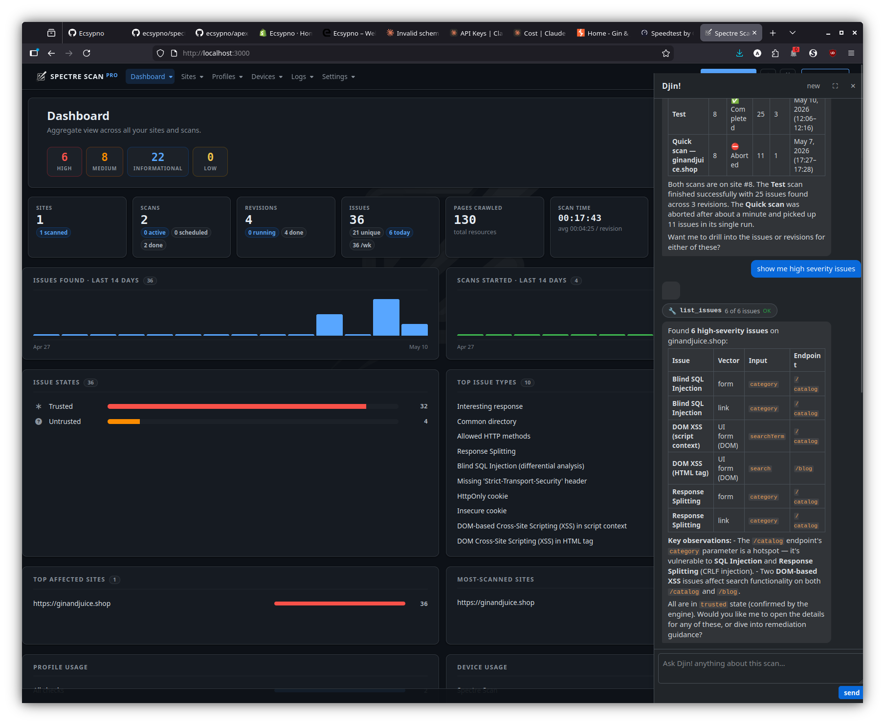
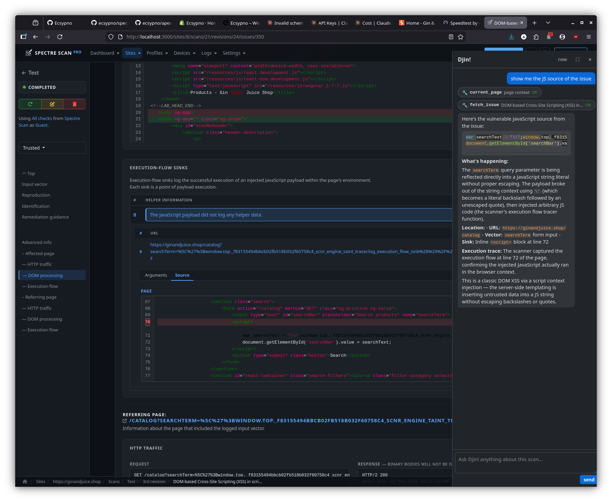
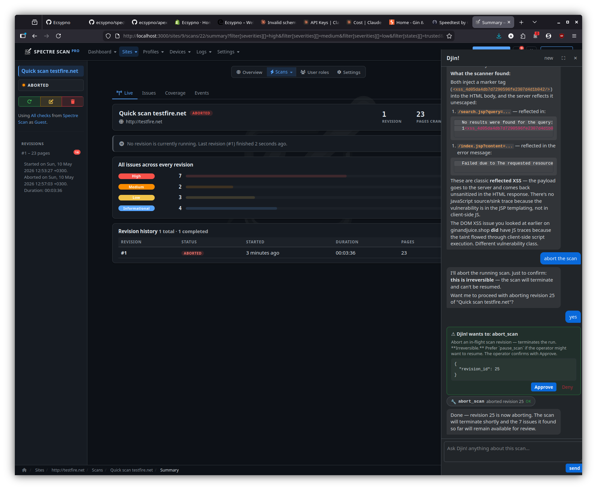

Introduction
Description
Spectre Scan is a modular, distributed, high-performance DAST web application security scanner framework, capable of analyzing the behavior and security of modern web applications and web APIs.
You can access Spectre Scan via multiple interfaces, such as:
Back-end support
A wide range of back-end technologies is supported, including:
- Operating systems
- BSD
- Linux
- Unix
- Windows
- Solaris
- Databases
- SQL
- MySQL
- PostreSQL
- MSSQL
- Oracle
- SQLite
- Ingres
- EMC
- DB2
- Interbase
- Informix
- Firebird
- MaxDB
- Sybase
- Frontbase
- HSQLDB
- Access
- NoSQL
- MongoDB
- SQL
- Web servers
- Apache
- IIS
- Nginx
- Tomcat
- Jetty
- Gunicorn
- Programming languages
- PHP
- ASP
- ASPX
- Java
- Python
- Ruby
- Javascript
- Frameworks
- Rack
- CakePHP
- Rails
- Django
- ASP.NET MVC
- JSF
- CherryPy
- Nette
- Symfony
- NodeJS
- Express
This list keeps growing but new platforms or failure to fingerprint supported ones don’t disable the Spectre Scan engine, they merely force it to be more extensive in its scan.
Upon successful identification or configuration of platform types, the scan will be much more focused, less resource intensive and require less time to complete.
Front-end support
HTML5, modern Javascript APIs and modern DOM APIs are supported by basing their execution and analysis on Google Chromium.
Spectre Scan injects a custom environment to monitor JS objects and APIs in order to trace execution and data flows and thus provide highly in-depth reporting as to how a client-side security issue was identified which also greatly assists in its remediation.
Incremental scans
Save valuable time by re-scanning only what has changed, rather than running full scans every single time.
In order to save time on subsequent scans of the same target, Spectre Scan allows you to extract a session file from completed/aborted scans, in order to allow for incremental re-scans.
This means that only newly introduced input vectors will be audited the next time around, which saves immense amounts of time from your workflow.
For example, a seed (first) scan of a website that requires an hour to complete, can result in re-scan times of less that 10 minutes – depending on how many new input vectors were introduced.
Behavioral analysis
Spectre Scan will study the web application/service to identify how each input interacts with the front and back ends and tailor the audit for each specific input’s characteristics.
This results in highly self-optimized scans using less resources and requiring less time to complete, as well as less server stress.
Training also continues during the audit process and new inputs that may appear during that time will be incorporated into the scan in whole.
Extendability
Its modular architecture allows for easy augmentation when it comes to security checks, arbitrary custom functionality in the form of plugins and bespoke reporting.
Entities which perform tasks crucial to the operation of a web scanner have been abstracted to be components, more to be easily added by anyone in order to extend functionality.
Components are split into the following types:
- Checks – Security checks.
- Active – They actively engage the web application via its inputs.
- Passive – They passively look for objects.
- Plugins – Add arbitrary functionality to the system, accept options and run in parallel to the scan.
- Reporters – They export the scan results in several formats.
- Path extractors – They extract paths for the crawler to follow.
- Fingerprinters – They identify OS version, platforms, servers, etc.
Customization
Furthermore, scripted scans allow for the creation of basically tailor made scans by moving decision making points and configuration to user-specified methods and can extend to even creating a custom scanner for any web application backed by the Spectre Scan engine.
The API is tidy and simple and easily allows you to plug-in to key API1 scan points in order to get the best results from any scan.
Scripts are written in Ruby and can thus be stored in your favorite CVS, this enables you to work side-by-side with the web application development team and have the right script revision alongside the respective web application revision.
Scalability
No dependencies, no configuration; Spectre Scan can build a cloud of itself that allows you to scale both horizontally and vertically.
Scale up by plugging more nodes to its Grid, or down by unplugging them.
Furthermore, with multi-Instance scans you can not only distribute multiple scans across nodes, but also individual scans, for super fast scanning of large sites.
Finally, with its quick suspend-to-disk/restore feature, running scans can easily be moved from node to node, accommodating highly optimized load-balancing and cost saving policies.
Deployment
Deployment options range from command-line utilities for direct scans, scripted scans (for configuration and custom scanners) as well as distributed deployments to perform scans from remote hosts and Grid/cloud/SaaS setups.
Its simple distributed architecture2 allows for easy creation of self-healing, load-balanced (vertically and horizontally) scanner grids; basically allowing for the creation of private scanner clouds in either yours or a Cloud provider’s infrastructure.
Conclusion
Thus, Spectre Scan can in essence fit into any SDLC with great grace, ease and little care.
Installation
For installation instructions please refer to the installer.
System requirements
| Operating System | Architecture | RAM | Disk | CPU |
|---|---|---|---|---|
| Linux | x86 64bit | 2GB | 4GB | Multicore |
Resource constrained environments
To optimize the resources a scan may use please consult:
In addition, Agents and other servers can have their max-slots adjusted
to a user-specified value, instead of the default, which is auto and based
on the aforementioned system requirements.
Please issue the -h flag to see available options for each executable in order
to examine the applicable overrides.
Direct
The easiest approach is a direct scan using the spectre CLI executable.
To see all available options run:
bin/spectre -h
Example
The following command will run a scan with default settings against http://testhmtml5.vulnweb.com.
bin/spectre http://testhmtml5.vulnweb.com
Scripted
Scripted scans allow you to configure the system and take over decision making points for a much more fine-grained scan. Aside from that, scripts also allow you to quickly add custom components on the fly.
Scan scripts can either be a form of configuration or standalone scanners.
Examples
As configuration
With helpers
html5.config.rb:
SCNR::Application::API.run do
require '/home/user/script/helpers'
Dom {
on :event, &method(:on_event_handler)
}
Checks {
# This will run from the context of SCNR::Engine::Check::Base; it
# basically creates a new check component on the fly.
as :not_found, check_404_info, method(:check_404)
}
Plugins {
# This will run from the context of SCNR::Engine::Plugin::Base; it
# basically creates a new plugin component on the fly.
as :my_plugin, my_plugin_info, method(:my_plugin)
}
Scan {
Session {
to :login, &method(:login)
to :check, &method(:login_check)
}
Scope {
# Don't visit resources that will end the session.
reject :url, &method(:to_logout)
}
}
end
helpers.rb:
# Allow some time for the modal animation to complete in order for
# the login form to appear.
#
# (Not actually necessary, this is just an example on how to hande quirks.)
def on_event_handler( result, locator, event, options, browser )
return if locator.attributes['href'] != '#myModal' || event != :click
sleep 1
end
# Does something really simple, logs an issue for each 404 page.
def check_404
response = page.response
return if response.code != 404
log(
proof: response.status_line,
vector: SCNR::Engine::Element::Server.new( response.url ),
response: response
)
end
def check_404_info
{
issue: {
name: 'Page not found',
severity: SCNR::Engine::Issue::Severity::INFORMATIONAL
}
}
end
def my_plugin
# Do stuff then wait until scan completes.
wait_while_framework_running
# Do stuff after scan completes.
end
def my_plugin_info
{
name: 'My Plugin',
description: 'Just waits for the scan to finish,'
}
end
def login( browser )
# Login with whichever interface you prefer.
watir = browser.watir
selenium = browser.selenium
watir.goto SCNR::Engine::Options.url
watir.link( href: '#myModal' ).click
form = watir.form( id: 'loginForm' )
form.text_field( name: 'username' ).set 'admin'
form.text_field( name: 'password' ).set 'admin'
form.submit
end
def login_check( &in_async_mode )
http_client = SCNR::Engine::HTTP::Client
check = proc { |r| r.body.optimized_include? '<b>admin' }
# If an async block is passed, then the framework would rather
# schedule it to run asynchronously.
if in_async_mode
http_client.get SCNR::Engine::Options.url do |response|
in_async_mode.call check.call( response )
end
else
response = http_client.get( SCNR::Engine::Options.url, mode: :sync )
check.call( response )
end
end
def to_logout( url )
url.path.optimized_include?( 'login' ) ||
url.path.optimized_include?( 'logout' )
end
Single file
SCNR::Application::API.run do
Dom {
# Allow some time for the modal animation to complete in order for
# the login form to appear.
#
# (Not actually necessary, this is just an example on how to hande quirks.)
on :event do |_, locator, event, *|
next if locator.attributes['href'] != '#myModal' || event != :click
sleep 1
end
}
Checks {
# This will run from the context of SCNR::Engine::Check::Base; it
# basically creates a new check component on the fly.
#
# Does something really simple, logs an issue for each 404 page.
as :not_found,
issue: {
name: 'Page not found',
severity: SCNR::Engine::Issue::Severity::INFORMATIONAL
} do
response = page.response
next if response.code != 404
log(
proof: response.status_line,
vector: SCNR::Engine::Element::Server.new( response.url ),
response: response
)
end
}
Plugins {
# This will run from the context of SCNR::Engine::Plugin::Base; it
# basically creates a new plugin component on the fly.
as :my_plugin do
# Do stuff then wait until scan completes.
wait_while_framework_running
# Do stuff after scan completes.
end
}
Scan {
Session {
to :login do |browser|
# Login with whichever interface you prefer.
watir = browser.watir
selenium = browser.selenium
watir.goto SCNR::Engine::Options.url
watir.link( href: '#myModal' ).click
form = watir.form( id: 'loginForm' )
form.text_field( name: 'username' ).set 'admin'
form.text_field( name: 'password' ).set 'admin'
form.submit
end
to :check do |async|
http_client = SCNR::Engine::HTTP::Client
check = proc { |r| r.body.optimized_include? '<b>admin' }
# If an async block is passed, then the framework would rather
# schedule it to run asynchronously.
if async
http_client.get SCNR::Engine::Options.url do |response|
success = check.call( response )
async.call success
end
else
response = http_client.get( SCNR::Engine::Options.url, mode: :sync )
check.call( response )
end
end
}
Scope {
# Don't visit resources that will end the session.
reject :url do |url|
url.path.optimized_include?( 'login' ) ||
url.path.optimized_include?( 'logout' )
end
}
}
end
Supposing the above is saved as html5.config.rb:
bin/spectre http://testhtml5.vulnweb.com --script=html5.config.rb
Standalone
This basically creates a custom scanner.
The difference is that these scripts will run a scan and handle its results on their own, and not just serve as configuration.
With helpers
When a scan script is large-ish and/or complicated it’s better to split it into the main file and helper handler methods.
bin/spectre_script scanner.rb
scanner.rb:
require 'scnr/engine/api'
require "#{Options.paths.root}/tmp/scripts/with_helpers/helpers"
SCNR::Application::API.run do
Scan {
# Can also be written as:
#
# options.set(
# url: 'http://testhtml5.vulnweb.com',
# audit: {
# elements: [:links, :forms, :cookies, :ui_inputs, :ui_forms]
# },
# checks: ['*']
# )
Options {
set url: 'http://my-site.com',
audit: {
elements: [:links, :forms, :cookies, :ui_inputs, :ui_forms]
},
checks: ['*']
}
# Scan session configuration.
Session {
# Login using the #fill_in_and_submit_the_login_form method from the helpers.rb file.
to :login, :fill_in_and_submit_the_login_form
# Check for a valid session using the #find_welcome_message method from the helpers.rb file.
to :check, :find_welcome_message
}
# Scan scope configuration.
Scope {
# Limit the scope of the scan based on URL.
select :url, :within_the_eshop
# Limit the scope of the scan based on Element.
reject :element, :with_sensitive_action; also :with_weird_nonce
# Only select pages that are in the admin panel.
select :page, :in_admin_panel
# Limit the scope of the scan based on Page.
reject :page, :with_error
# Limit the scope of the scan based on DOM events and DOM elements.
# In this case, never click the logout button!
reject :event, :that_clicks_the_logout_button
}
# Run the scan and handle the results (in this case print to STDOUT) using #handle_results.
run! :handle_results
}
Logging {
# Error and exception handling.
on :error, :log_error
on :exception, :log_exception
}
Data {
# Don't store issues in memory, we'll send them to the DB.
issues.disable(:storage).on :new, :save_to_db
# Could also be written as:
#
# Issues {
# disable(:storage)
# on :new, :save_to_db)
# }
#
# Or:
#
# Issues { disable(:storage); on :new, :save_to_db) }
# Store every page in the DB too for later analysis.
pages.on :new, :save_to_db
# Or:
#
# Pages {
# on :new, :save_to_db
# }
}
Http {
on :request, :add_special_auth_header
on :response, :gather_traffic_data; also :increment_http_performer_count
}
Checks {
# Add a custom check on the fly to check for something simple specifically
# for this scan.
as :missing_important_header, with_missing_important_header_info,
:log_pages_with_missing_important_headers
}
# Been having trouble with this scan, collect some runtime statistics.
plugins.as :remote_debug, send_debugging_info_to_remote_server_info,
:send_debugging_info_to_remote_server
# Serves PHP scripts under the extension 'x'.
fingerprinters.as :php_x, :treat_x_as_php
Input {
# Vouchers and serial numbers need to come from an algorithm.
values :with_valid_role_id
}
Dom {
# Let's have a look inside the live JS env of those interesting pages,
# setup the data collection.
before :load, :start_js_data_gathering
after :load, :retrieve_js_data; also :event, :retrieve_event_js_data
}
end
helpers.rb:
# State
def log_error( error )
# ...
end
def log_exception( exception )
# ...
end
# Data
def save_to_db( obj )
# Do stufff...
end
def save_js_data_to_db( data, element, event )
# Do other stufff...
end
# Scope
def within_the_eshop( url )
url.path.start_with? '/eshop'
end
def with_error( page )
/Error/i.match? page.body
end
def in_admin_panel( page )
/Admin panel/i.match? page.body
end
def that_clicks_the_logout_button( event, element )
event == :click && element.tag_name == :button &&
element.attributes['id'] == 'logout'
end
def with_sensitive_action( element )
element.action.include? '/sensitive.php'
end
def with_weird_nonce( element )
element.inputs.include? 'weird_nonce'
end
# HTTP
def generate_request_header
# ...
end
def save_raw_http_response( response )
# ...
end
def save_raw_http_request( request )
# ...
end
def add_special_auth_header( request )
request.headers['Special-Auth-Header'] ||= generate_request_header
end
def increment_http_performer_count( response )
# Count the amount of requests/responses this system component has
# performed/received.
#
# Performers can be browsers, checks, plugins, session, etc.
stuff( response.request.performer.class )
end
def gather_traffic_data( response )
# Collect raw HTTP traffic data.
save_raw_http_response( response.to_s )
save_raw_http_request( response.request.to_s )
end
# Checks
def with_missing_important_header_info
{
name: 'Missing Important-Header',
description: %q{Checks pages for missing `Important-Header` headers.},
elements: [ Element::Server ],
issue: {
name: %q{Missing 'Important-Header' header},
severity: Severity::INFORMATIONAL
}
}
end
# This will run from the context of a Check::Base.
def log_pages_with_missing_important_headers
return if audited?( page.parsed_url.host ) ||
page.response.headers['Important-Header']
audited( page.parsed_url.host )
log(
vector: Element::Server.new( page.url ),
proof: page.response.headers_string
)
end
# Plugins
# This will run from the context of a Plugin::Base.
def send_debugging_info_to_remote_server
address = '192.168.0.11'
port = 81
auth = Utilities.random_seed
url = `start_remote_debug_server.sh -a #{address} -p #{port} --auth #{auth}`
url.strip!
http.post( url,
body: SCNR::Engine::SCNR::Engine::Options.to_h.to_json,
mode: :sync
)
while framework.running? && sleep( 5 )
http.post( "#{url}/statistics",
body: framework.statistics.to_json,
mode: :sync
)
end
end
def send_debugging_info_to_remote_server_info
{
name: 'Debugger'
}
end
# Fingerprinters
# This will run from the context of a Fingerprinter::Base.
def treat_x_as_php
return if extension != 'x'
platforms << :php
end
# Session
def fill_in_and_submit_the_login_form( browser )
browser.load "#{SCNR::Engine::SCNR::Engine::Options.url}/login"
form = browser.form
form.text_field( name: 'username' ).set 'john'
form.text_field( name: 'password' ).set 'doe'
form.input( name: 'submit' ).click
end
def find_welcome_message
http.get( SCNR::Engine::Options.url, mode: :sync ).body.include?( 'Welcome user!' )
end
# Inputs
def with_valid_code( name, current_value )
{
'voucher-code' => voucher_code_generator( current_value ),
'serial-number' => serial_number_generator( current_value )
}[name]
end
def with_valid_role_id( inputs )
return if !inputs.include?( 'role-type' )
inputs['role-id'] ||= (inputs['role-type'] == 'manager' ? 1 : 2)
inputs
end
# Browser
def start_js_data_gathering( page, browser )
return if !page.url.include?( 'something/interesting' )
browser.javascript.inject <<JS
// Gather JS data from listeners etc.
window.secretJSData = {};
JS
end
def retrieve_js_data( page, browser )
return if !page.url.include?( 'something/interesting' )
save_js_data_to_db(
browser.javascript.run( 'return window.secretJSData' ),
page, :load
)
end
def retrieve_event_js_data( event, element, browser )
return if !browser.url.include?( 'something/interesting' )
save_js_data_to_db(
browser.javascript.run( 'return window.secretJSData' ),
element, event
)
end
def handle_results( report, statistics )
puts
puts '=' * 80
puts
puts "[#{report.sitemap.size}] Sitemap:"
puts
report.sitemap.sort_by { |url, _| url }.each do |url, code|
puts "\t[#{code}] #{url}"
end
puts
puts '-' * 80
puts
puts "[#{report.issues.size}] Issues:"
puts
report.issues.each.with_index do |issue, idx|
s = "\t[#{idx+1}] #{issue.name} in `#{issue.vector.type}`"
if issue.vector.respond_to?( :affected_input_name ) &&
issue.vector.affected_input_name
s << " input `#{issue.vector.affected_input_name}`"
end
puts s << '.'
puts "\t\tAt `#{issue.page.dom.url}` from `#{issue.referring_page.dom.url}`."
if issue.proof
puts "\t\tProof:\n\t\t\t#{issue.proof.gsub( "\n", "\n\t\t\t" )}"
end
puts
end
puts
puts '-' * 80
puts
puts "Statistics:"
puts
puts "\t" << statistics.ai.gsub( "\n", "\n\t" )
end
Single file
require 'scnr/engine/api'
# Mute output messages from the CLI interface, we've got our own output methods.
SCNR::UI::CLI::Output.mute
SCNR::Application::API.run do
State {
on :change do |state|
puts "State\t\t- #{state.status.capitalize}"
end
}
Data {
Issues {
on :new do |issue|
puts "Issue\t\t- #{issue.name} from `#{issue.referring_page.dom.url}`" <<
" in `#{issue.vector.type}`."
end
}
}
Logging {
on :error do |error|
$stderr.puts "Error\t\t- #{error}"
end
# Way too much noise.
# on :exception do |exception|
# ap exception
# ap exception.backtrace
# end
}
Dom {
# Allow some time for the modal animation to complete in order for
# the login form to appear.
#
# (Not actually necessary, this is just an example on how to hande quirks.)
on :event do |_, locator, event, *|
next if locator.attributes['href'] != '#myModal' || event != :click
sleep 1
end
}
Checks {
# This will run from the context of SCNR::Engine::Check::Base; it
# basically creates a new check component on the fly.
#
# Does something really simple, logs an issue for each 404 page.
as :not_found,
issue: {
name: 'Page not found',
severity: SCNR::Engine::Issue::Severity::INFORMATIONAL
} do
response = page.response
next if response.code != 404
log(
proof: response.status_line,
vector: SCNR::Engine::Element::Server.new( response.url ),
response: response
)
end
}
Plugins {
# This will run from the context of SCNR::Engine::Plugin::Base; it
# basically creates a new plugin component on the fly.
as :my_plugin do
puts "#{shortname}\t- Running..."
wait_while_framework_running
puts "#{shortname}\t- Done!"
end
}
Scan {
Options {
set url: 'http://testhtml5.vulnweb.com',
audit: {
elements: [:links, :forms, :cookies]
},
checks: ['*']
}
Session {
to :login do |browser|
print "Session\t\t- Logging in..."
# Login with whichever interface you prefer.
watir = browser.watir
selenium = browser.selenium
watir.goto SCNR::Engine::Options.url
watir.link( href: '#myModal' ).click
form = watir.form( id: 'loginForm' )
form.text_field( name: 'username' ).set 'admin'
form.text_field( name: 'password' ).set 'admin'
form.submit
if browser.response.body =~ /<b>admin/
puts 'done!'
else
puts 'failed!'
end
end
to :check do |async|
print "Session\t\t- Checking..."
http_client = SCNR::Engine::HTTP::Client
check = proc { |r| r.body.optimized_include? '<b>admin' }
# If an async block is passed, then the framework would rather
# schedule it to run asynchronously.
if async
http_client.get SCNR::Engine::Options.url do |response|
success = check.call( response )
puts "logged #{success ? 'in' : 'out'}!"
async.call success
end
else
response = http_client.get( SCNR::Engine::Options.url, mode: :sync )
success = check.call( response )
puts "logged #{success ? 'in' : 'out'}!"
success
end
end
}
Scope {
# Don't visit resources that will end the session.
reject :url do |url|
url.path.optimized_include?( 'login' ) ||
url.path.optimized_include?( 'logout' )
end
}
before :page do |page|
puts "Processing\t- [#{page.response.code}] #{page.dom.url}"
end
on :page do |page|
puts "Scanning\t- [#{page.response.code}] #{page.dom.url}"
end
after :page do |page|
puts "Scanned\t\t- [#{page.response.code}] #{page.dom.url}"
end
run! do |report, statistics|
puts
puts '=' * 80
puts
puts "[#{report.sitemap.size}] Sitemap:"
puts
report.sitemap.sort_by { |url, _| url }.each do |url, code|
puts "\t[#{code}] #{url}"
end
puts
puts '-' * 80
puts
puts "[#{report.issues.size}] Issues:"
puts
report.issues.each.with_index do |issue, idx|
s = "\t[#{idx+1}] #{issue.name} in `#{issue.vector.type}`"
if issue.vector.respond_to?( :affected_input_name ) &&
issue.vector.affected_input_name
s << " input `#{issue.vector.affected_input_name}`"
end
puts s << '.'
puts "\t\tAt `#{issue.page.dom.url}` from `#{issue.referring_page.dom.url}`."
if issue.proof
puts "\t\tProof:\n\t\t\t#{issue.proof.gsub( "\n", "\n\t\t\t" )}"
end
puts
end
puts
puts '-' * 80
puts
puts "Statistics:"
puts
puts "\t" << statistics.ai.gsub( "\n", "\n\t" )
end
}
end
Supposing the above is saved as html5.scanner.rb:
bin/spectre_script html5.scanner.rb
Distributed
Distribution features are deferred to Cuboid; hence, a quick read through its readme will outline the architecture.
In this case, the Cuboid application is Spectre Scan.
Agent
To start an Agent run the spectre_agent CLI executable.
To see all available options run:
bin/spectre_agent -h
Each Agent should run on a different machine and its main role is to provide Instances to clients; each Instance is a scanner process.
The Agent will also split the available resources of the machine on which it runs into slots, with each slot corresponding to enough space for one Instance.
(To see how many slots a machine has you can use the spectre_system_info utility.)
Example
Server
In one terminal run:
bin/spectre_agent
The default port at the time of writing is 7331, so you should see something like:
I, [2022-01-23T09:54:21.849679 #1121060] INFO -- System: RPC Server started.
I, [2022-01-23T09:54:21.849730 #1121060] INFO -- System: Listening on 127.0.0.1:7331
Client
To start a scan originating from that Agent you must issue a spawn
call in order to obtain an Instance; this can be achieved using the spectre_spawn
CLI executable.
In another terminal run:
bin/spectre_spawn --agent-url=127.0.0.1:7331 http://testhtml5.vulnweb.com
The above will run a scan with the default options against http://testhtml5.vulnweb.com, originating from the Agent node.
The spectre_spawn utility largely accepts the same options as spectre.
If the Agent is out of slots you will see the following message:
[~] Agent is at maximum utilization, please try again later.
In which case you can keep retrying until a slot opens up.
Grid
A Grid is simply a group of Agents and its setup is as simple as specifying an already running Agent as a peer to a future Agent.
The order in which you start or specify peers is irrelevant, Agents will reach convergence on their own and keep track of their connectivity status with each other.
After a Grid is configured, when a spawn call is issued to any Grid
member it will be served by any of its Agents based on the desired
distribution strategy and not necessarily by the one receiving it.
Strategies
Horizontal (default)
spawn calls will be served by the least burdened Agent, i.e. the
Agent with the least utilization of its slots.
This strategy helps to keep the overall Grid health good by spreading the workload across as many nodes as possible.
Vertical
spawn calls will be served by the most burdened Agent, i.e. the
Agent with the most utilization of its slots.
This strategy helps to keep the overall Grid size (and thus cost) low by utilizing as few Grid nodes as possible.
It will also let you know if you have over-provisioned as extra nodes will not be receiving any workload.
Examples
Server
In one terminal run:
bin/spectre_agent
In another terminal run:
bin/spectre_agent --port=7332 --peer=127.0.0.1:7331
In another terminal run:
bin/spectre_agent --port=7333 --peer=127.0.0.1:7332
(It doesn’t matter who the peer is as long as it’s part of the Grid.)
Now we have a Grid of 3 Agents.
The point of course is to run each Agent on a different machine in real life.
Client
Same as Agent client.
Scheduler
To start a Scheduler run the spectre_scheduler CLI executable.
To see all available options run:
bin/spectre_scheduler -h
The main role of the Scheduler is to:
- Queue scans based on their assigned priority.
- Run them if there is an available slot.
- Monitor their progress.
- Grab and store reports once scans complete.
Default
By default, scans will run on the same machine as the Scheduler.
With Agent
When a Agent has been provided, spawn calls are going to be issued
in order to acquire Instances to run the scans.
Grid
In the case where the given Agent is a Grid member, scans will be load-balanced across the Grid according the the configured strategy.
Examples
Server
In one terminal run:
bin/spectre_scheduler
Client
Pushing
In another terminal run:
bin/spectre_scheduler_push --scheduler-url=localhost:7331 http://testhtml5.vulnweb.com
Then you should see something like:
[~] Pushed scan with ID: 5fed6c50f3699bacb841cc468cc97094
Monitoring
To see what the Scheduler is doing run:
bin/spectre_scheduler_list localhost:7331
Then you should see something like:
[~] Queued [0]
[*] Running [1]
[1] 5fed6c50f3699bacb841cc468cc97094: 127.0.0.1:3390/070116f5e2c0acaa0a6432acdcc7230a
[+] Completed [0]
[-] Failed [0]
If you run the same command after a while and the scan has completed:
[~] Queued [0]
[*] Running [0]
[+] Completed [1]
[1] 5fed6c50f3699bacb841cc468cc97094: /home/username/.cuboid/reports/5fed6c50f3699bacb841cc468cc97094.crf
[-] Failed [0]
Introspector
The Spectre Scan Introspector is basically middleware for your web application.
When this middleware is used, advanced execution and data flow information about the web application is gathered, allowing for easier identification and remediation of each identified issue.
Ruby
Install
gem install scnr-introspector
Use middleware
Options
| Option | Description | Default | Example |
|---|---|---|---|
path_start_with | Only instrument classes whose path starts with this prefix | none | example/ |
path_ends_with | Only instrument classes whose path ends with this suffix | none | app.rb |
path_include_patterns | Only instrument classes whose path matches all regex patterns | none | .*service.* |
path_exclude_patterns | Exclude classes matching whose path matches any regex patterns | none | .*test.* |
app.rb:
require 'scnr/introspector' # Include!
require 'sinatra/base'
class MyApp < Sinatra::Base
# Use!
use SCNR::Introspector, scope: {
path_start_with: __FILE__
}
def noop
end
def process_params( params )
noop
params.values.join( ' ' )
end
get '/' do
@instance_variable = {
blah: 'foo'
}
local_variable = 1
<<EOHTML
#{process_params( params )}
<a href="?v=stuff">XSS</a>
EOHTML
end
run!
end
Verify
Run the Web App:
bundle exec ruby examples/sinatra/app.rb
You should see this at the beginning:
[INTROSPECTOR] Spectre Scan Introspector Initialized.
Along with these types of messages:
[INTROSPECTOR] Injecting trace code for MyApp#process_params in examples/sinatra/app.rb:12
As an integration test, you can run:
curl -i http://localhost:4567/ -H "X-Scnr-Engine-Scan-Seed:Test" -H "X-Scnr-Introspector-Trace:1" -H "X-SCNR-Request-ID:1"
You should see something like this (the comments are the important part):
HTTP/1.1 200 OK
Content-Type: text/html;charset=utf-8
X-XSS-Protection: 1; mode=block
X-Content-Type-Options: nosniff
X-Frame-Options: SAMEORIGIN
Content-Length: 7055
<a href="?v=stuff">XSS</a>
<!-- Test
{"execution_flow":{"points":[{"path":"examples/sinatra/app.rb","line_number":17,"class_name":"MyApp","method_name":"GET /","event":"call","source":" get '/' do\n","file_contents":"require 'scnr/introspector'\nrequire 'sinatra/base'\n\nclass MyApp < Sinatra::Base\n use SCNR::Introspector, scope: {\n path_start_with: __FILE__\n }\n\n def noop\n end\n\n def process_params( params )\n noop\n params.values.join( ' ' )\n end\n\n get '/' do\n @instance_variable = {\n blah: 'foo'\n }\n local_variable = 1\n\n <<EOHTML\n #{process_params( params )}\n <a href=\"?v=stuff\">XSS</a>\nEOHTML\n end\n\n run!\nend\n"},{"path":"examples/sinatra/app.rb","line_number":19,"class_name":"MyApp","method_name":"GET /","event":"line","source":" blah: 'foo'\n","file_contents":"require 'scnr/introspector'\nrequire 'sinatra/base'\n\nclass MyApp < Sinatra::Base\n use SCNR::Introspector, scope: {\n path_start_with: __FILE__\n }\n\n def noop\n end\n\n def process_params( params )\n noop\n params.values.join( ' ' )\n end\n\n get '/' do\n @instance_variable = {\n blah: 'foo'\n }\n local_variable = 1\n\n <<EOHTML\n #{process_params( params )}\n <a href=\"?v=stuff\">XSS</a>\nEOHTML\n end\n\n run!\nend\n"},{"path":"examples/sinatra/app.rb","line_number":21,"class_name":"MyApp","method_name":"GET /","event":"line","source":" local_variable = 1\n","file_contents":"require 'scnr/introspector'\nrequire 'sinatra/base'\n\nclass MyApp < Sinatra::Base\n use SCNR::Introspector, scope: {\n path_start_with: __FILE__\n }\n\n def noop\n end\n\n def process_params( params )\n noop\n params.values.join( ' ' )\n end\n\n get '/' do\n @instance_variable = {\n blah: 'foo'\n }\n local_variable = 1\n\n <<EOHTML\n #{process_params( params )}\n <a href=\"?v=stuff\">XSS</a>\nEOHTML\n end\n\n run!\nend\n"},{"path":"examples/sinatra/app.rb","line_number":23,"class_name":"MyApp","method_name":"GET /","event":"line","source":" <<EOHTML\n","file_contents":"require 'scnr/introspector'\nrequire 'sinatra/base'\n\nclass MyApp < Sinatra::Base\n use SCNR::Introspector, scope: {\n path_start_with: __FILE__\n }\n\n def noop\n end\n\n def process_params( params )\n noop\n params.values.join( ' ' )\n end\n\n get '/' do\n @instance_variable = {\n blah: 'foo'\n }\n local_variable = 1\n\n <<EOHTML\n #{process_params( params )}\n <a href=\"?v=stuff\">XSS</a>\nEOHTML\n end\n\n run!\nend\n"},{"path":"examples/sinatra/app.rb","line_number":12,"class_name":"MyApp","method_name":"process_params","event":"call","source":" def process_params( params )\n","file_contents":"require 'scnr/introspector'\nrequire 'sinatra/base'\n\nclass MyApp < Sinatra::Base\n use SCNR::Introspector, scope: {\n path_start_with: __FILE__\n }\n\n def noop\n end\n\n def process_params( params )\n noop\n params.values.join( ' ' )\n end\n\n get '/' do\n @instance_variable = {\n blah: 'foo'\n }\n local_variable = 1\n\n <<EOHTML\n #{process_params( params )}\n <a href=\"?v=stuff\">XSS</a>\nEOHTML\n end\n\n run!\nend\n"},{"path":"examples/sinatra/app.rb","line_number":13,"class_name":"MyApp","method_name":"process_params","event":"line","source":" noop\n","file_contents":"require 'scnr/introspector'\nrequire 'sinatra/base'\n\nclass MyApp < Sinatra::Base\n use SCNR::Introspector, scope: {\n path_start_with: __FILE__\n }\n\n def noop\n end\n\n def process_params( params )\n noop\n params.values.join( ' ' )\n end\n\n get '/' do\n @instance_variable = {\n blah: 'foo'\n }\n local_variable = 1\n\n <<EOHTML\n #{process_params( params )}\n <a href=\"?v=stuff\">XSS</a>\nEOHTML\n end\n\n run!\nend\n"},{"path":"examples/sinatra/app.rb","line_number":9,"class_name":"MyApp","method_name":"noop","event":"call","source":" def noop\n","file_contents":"require 'scnr/introspector'\nrequire 'sinatra/base'\n\nclass MyApp < Sinatra::Base\n use SCNR::Introspector, scope: {\n path_start_with: __FILE__\n }\n\n def noop\n end\n\n def process_params( params )\n noop\n params.values.join( ' ' )\n end\n\n get '/' do\n @instance_variable = {\n blah: 'foo'\n }\n local_variable = 1\n\n <<EOHTML\n #{process_params( params )}\n <a href=\"?v=stuff\">XSS</a>\nEOHTML\n end\n\n run!\nend\n"},{"path":"examples/sinatra/app.rb","line_number":14,"class_name":"MyApp","method_name":"process_params","event":"line","source":" params.values.join( ' ' )\n","file_contents":"require 'scnr/introspector'\nrequire 'sinatra/base'\n\nclass MyApp < Sinatra::Base\n use SCNR::Introspector, scope: {\n path_start_with: __FILE__\n }\n\n def noop\n end\n\n def process_params( params )\n noop\n params.values.join( ' ' )\n end\n\n get '/' do\n @instance_variable = {\n blah: 'foo'\n }\n local_variable = 1\n\n <<EOHTML\n #{process_params( params )}\n <a href=\"?v=stuff\">XSS</a>\nEOHTML\n end\n\n run!\nend\n"},{"path":"examples/sinatra/app.rb","line_number":14,"class_name":"Hash","method_name":"values","event":"c_call","source":" params.values.join( ' ' )\n","file_contents":"require 'scnr/introspector'\nrequire 'sinatra/base'\n\nclass MyApp < Sinatra::Base\n use SCNR::Introspector, scope: {\n path_start_with: __FILE__\n }\n\n def noop\n end\n\n def process_params( params )\n noop\n params.values.join( ' ' )\n end\n\n get '/' do\n @instance_variable = {\n blah: 'foo'\n }\n local_variable = 1\n\n <<EOHTML\n #{process_params( params )}\n <a href=\"?v=stuff\">XSS</a>\nEOHTML\n end\n\n run!\nend\n"},{"path":"examples/sinatra/app.rb","line_number":14,"class_name":"Array","method_name":"join","event":"c_call","source":" params.values.join( ' ' )\n","file_contents":"require 'scnr/introspector'\nrequire 'sinatra/base'\n\nclass MyApp < Sinatra::Base\n use SCNR::Introspector, scope: {\n path_start_with: __FILE__\n }\n\n def noop\n end\n\n def process_params( params )\n noop\n params.values.join( ' ' )\n end\n\n get '/' do\n @instance_variable = {\n blah: 'foo'\n }\n local_variable = 1\n\n <<EOHTML\n #{process_params( params )}\n <a href=\"?v=stuff\">XSS</a>\nEOHTML\n end\n\n run!\nend\n"}]},"platforms":["ruby","linux"]}
-->
Java
Options
| Option | Description | Default | Example |
|---|---|---|---|
path_start_with | Only instrument classes whose path starts with this prefix | none | com/example |
path_ends_with | Only instrument classes whose path ends with this suffix | none | Controller |
path_include_pattern | Only instrument classes matching this regex pattern | none | .*Service.* |
path_exclude_pattern | Exclude classes matching this regex pattern | none | .*Test.* |
source_directory | Root directory containing source files | src/main/java/ | /path/to/src |
Download
Download the latest JAR archive.
Install Middleware
webapp/WEB-INF/web.xml:
<?xml version="1.0" encoding="UTF-8"?>
<web-app xmlns="http://xmlns.jcp.org/xml/ns/javaee"
xmlns:xsi="http://www.w3.org/2001/XMLSchema-instance"
xsi:schemaLocation="http://xmlns.jcp.org/xml/ns/javaee
http://xmlns.jcp.org/xml/ns/javaee/web-app_4_0.xsd"
version="4.0">
<filter>
<filter-name>introspectorFilter</filter-name>
<filter-class>com.ecsypno.introspector.middleware.IntrospectorFilter</filter-class>
</filter>
<filter-mapping>
<filter-name>introspectorFilter</filter-name>
<url-pattern>/*</url-pattern>
</filter-mapping>
</web-app>
Load Agent along with your webapp
MAVEN_OPTS="-javaagent:introspector.jar=path_start_with=com/example" mvn clean package tomcat7:run
Verify
You should see this at the beginning:
[INTROSPECTOR] Initializing Spectre Scan Introspector agent...
[INTROSPECTOR] Setting up instrumentation.
And messages like this after initialization for each traced line:
[INTROSPECTOR] Injecting trace code for com/example/XssServlet.<init> line 11 in src/main/java//com/example/XssServlet.java
Finally, for an integration test, to make sure:
curl -i http://localhost:8080/ -H "X-Scnr-Engine-Scan-Seed:Test" -H "X-Scnr-Introspector-Trace:1" -H "X-SCNR-Request-ID:1"
At the end of the HTTP response you should be seeing something like:
<!-- Test
{
"platforms": ["java"],
"execution_flow": {
"points": [
{
"method_name": "doGet",
"class_name": "com/example/SampleWebApp",
"path": "src/main/java//com/example/SampleWebApp.java",
"line_number": 16,
"source": " resp.setContentType(\"text/html\");",
"file_contents": "package com.example;\n\nimport java.io.IOException;\nimport javax.servlet.ServletException;\nimport javax.servlet.annotation.WebServlet;\nimport javax.servlet.http.HttpServlet;\nimport javax.servlet.http.HttpServletRequest;\nimport javax.servlet.http.HttpServletResponse;\n\n@WebServlet(\"/\")\npublic class SampleWebApp extends HttpServlet {\n @Override\n protected void doGet(HttpServletRequest req, HttpServletResponse resp) \n throws ServletException, IOException {\n\n resp.setContentType(\"text/html\");\n\n resp.getWriter().println(\"<html><body>\");\n resp.getWriter().println(\"<ul>\");\n resp.getWriter().println(\"<li><a href='/xss'>XSS</a></li>\");\n resp.getWriter().println(\"<li><a href='/cmd'>OS Command Injection</a></li>\");\n resp.getWriter().println(\"</ul>\");\n resp.getWriter().println(\"</body></html>\");\n }\n}"
},
[...]
]
}
}
Test -->
.NET
Installation
Install Middleware
Add to your project:
dotnet add package Introspector.Web
Install patcher
dotnet tool install --global Introspector.CLI
introspector
Use in a Web Application
Ecsypno.TestApp.csproj:
<ItemGroup>
<PackageReference Include="Introspector.Web"/>
</ItemGroup>
Ecsypno.TestApp.cs:
using Introspector.Web.Extensions;
using System.Web;
var builder = WebApplication.CreateBuilder(args);
var app = builder.Build();
// Add Introspector middleware
app.UseIntrospector();
string ProcessQuery(string input)
{
return input;
}
app.MapGet("/", () => "Hello, world!");
app.MapGet("/xss", (HttpContext context) =>
{
var query = ProcessQuery(context.Request.Query["input"]);
var response = $@"
<html>
<body>
<h1>XSS Example</h1>
<form method='get' action='/xss'>
<label for='input'>Input:</label>
<input type='text' id='input' name='input' value='{query}' />
<button type='submit'>Submit</button>
</form>
<p>{query}</p>
</body>
</html>";
context.Response.ContentType = "text/html";
return response;
});
app.Run();
dotnet run --project Ecsypno.TestApp -c Release
Should output [INTROSPECTOR] Spectre Scan Introspector middleware initialized. at the top.
Patch
dotnet build Ecsypno.TestApp -c Release # Build first.
introspector Ecsypno.TestApp/bin/Release/ --path-ends-with Ecsypno.TestApp.dll --path-exclude-pattern "ref|obj"
# Processing: Ecsypno.TestApp/bin/Release/net8.0/Ecsypno.TestApp.dll
# Instrumenting Program.<Main>$( args )
# Instrumenting Program.<Main>$ at /home/zapotek/workspace/scnr/dotnet-instrumentation-example/Ecsypno.TestApp/Program.cs:4
# Instrumenting Program.<Main>$ at /home/zapotek/workspace/scnr/dotnet-instrumentation-example/Ecsypno.TestApp/Program.cs:6
# Instrumenting Program.<Main>$ at /home/zapotek/workspace/scnr/dotnet-instrumentation-example/Ecsypno.TestApp/Program.cs:9
# Instrumenting Program.<Main>$ at /home/zapotek/workspace/scnr/dotnet-instrumentation-example/Ecsypno.TestApp/Program.cs:17
# Instrumenting Program.<Main>$ at /home/zapotek/workspace/scnr/dotnet-instrumentation-example/Ecsypno.TestApp/Program.cs:20
# Instrumenting Program.<Main>$ at /home/zapotek/workspace/scnr/dotnet-instrumentation-example/Ecsypno.TestApp/Program.cs:39
# Instrumenting Program.<<Main>$>g__ProcessQuery|0_0( input )
# Instrumenting Program.<<Main>$>g__ProcessQuery|0_0 at /home/zapotek/workspace/scnr/dotnet-instrumentation-example/Ecsypno.TestApp/Program.cs:14
Verify
Run the Web App again:
dotnet run --project Ecsypno.TestApp -c Release --no-build
Should output:
[INTROSPECTOR] Patched assembly loaded: Ecsypno.TestApp/bin/Release/net8.0/Ecsypno.TestApp.dll
[INTROSPECTOR] Spectre Scan Introspector middleware initialized.
curl -i http://localhost:5055/xss?input=test -H "X-Scnr-Engine-Scan-Seed:Test" -H "X-Scnr-Introspector-Trace:1" -H "X-SCNR-Request-ID:1"
You should see something like this (the comments are the important part):
HTTP/1.1 200 OK
Content-Length: 2135
Content-Type: text/html
Date: Sat, 11 Jan 2025 10:22:46 GMT
Server: Kestrel
<html>
<body>
<h1>XSS Example</h1>
<form method='get' action='/xss'>
<label for='input'>Input:</label>
<input type='text' id='input' name='input' value='test' />
<button type='submit'>Submit</button>
</form>
<p>test</p>
</body>
</html>
<!-- Test
{
"data_flow": [],
"execution_flow": {
"points": [
{
"class_name": "Program",
"method_name": "\u003C\u003CMain\u003E$\u003Eg__ProcessQuery|0_0",
"path": "/home/zapotek/workspace/scnr/dotnet-instrumentation-example/Ecsypno.TestApp/Program.cs",
"line_number": 14,
"source": " return input;",
"file_contents": "using Introspector.Web.Extensions;\nusing System.Web;\n\nvar builder = WebApplication.CreateBuilder(args);\n\nvar app = builder.Build();\n\n// Add Introspector middleware\napp.UseIntrospector();\n\nstring ProcessQuery(string input)\n{\n\n return input;\n}\n\napp.MapGet(\u0022/\u0022, () =\u003E \u0022Hello, world!\u0022);\n\n// Add an XSS example route with a form\napp.MapGet(\u0022/xss\u0022, (HttpContext context) =\u003E\n{\n var query = ProcessQuery(context.Request.Query[\u0022input\u0022]);\n var response = $@\u0022\n \u003Chtml\u003E\n \u003Cbody\u003E\n \u003Ch1\u003EXSS Example\u003C/h1\u003E\n \u003Cform method=\u0027get\u0027 action=\u0027/xss\u0027\u003E\n \u003Clabel for=\u0027input\u0027\u003EInput:\u003C/label\u003E\n \u003Cinput type=\u0027text\u0027 id=\u0027input\u0027 name=\u0027input\u0027 value=\u0027{query}\u0027 /\u003E\n \u003Cbutton type=\u0027submit\u0027\u003ESubmit\u003C/button\u003E\n \u003C/form\u003E\n \u003Cp\u003E{query}\u003C/p\u003E\n \u003C/body\u003E\n \u003C/html\u003E\u0022;\n context.Response.ContentType = \u0022text/html\u0022;\n return response;\n});\n\napp.Run();"
}
]
},
"platforms": [
"aspx"
]
}
Test -->
CLI
Command-line interface executables can be found under the bin/ directory and
at the time of writing are:
Basic, Pro, Enterprise
spectre– Direct scanning utility.spectre_reporter– Generates reports from.crf(Cuboid report file) and.ser(Spectre Scan report) report files.spectre_reproduce– Reproduces an issue(s) from a given report.spectre_restore– Restores a suspended scan based on a snapshot file.spectre_script– Runs a Ruby script under the context ofSCNR::Engine.
Pro
spectre_pro– Starts a Web interface server.
REST, SDLC, Enterprise
spectre_rest_server– Starts a REST server.
MCP, SDLC, Enterprise
spectre_mcp_server– Starts an MCP server.
Enterprise-only
spectre_spawn– Issuesspawncalls to Agents to start scans remotely.spectre_agent– Starts a Agent.spectre_scheduler– Starts a Scheduler.
Clients - no edition checks
spectre_agent_monitor– Monitors an Agent.spectre_agent_unplug– Unplugs an Agent from its Grid.spectre_instance_connect– Utility to connect to an Instance.spectre_scheduler_attach– Attaches a detached Instance to the given Scheduler.spectre_scheduler_clear– Clears the Scheduler queue.spectre_scheduler_detach– Detaches an Instance from the Scheduler.spectre_scheduler_get– Retrieves information for a scheduled scan.spectre_scheduler_list– Lists information about all scans under the Scheduler’s control.spectre_scheduler_push– Scheduled a scan.spectre_scheduler_remove– Removes a scheduled scan from the queue.
License utilities
spectre_activatespectre_editionspectre_available_seatsspectre_license info
Other
spectre_system_info– Presents system information about the host.
Ruby API
The Ruby API utilizes the DSeL DSL/API generator and runner and allows you to:
- Configure scans.
- Add custom components on the fly.
- Create custom scanners.
The API is separated into the following segments:
# Runs the DSL.
SCNR::Application::API.run do
Data {
Sitemap {}
Urls {}
Pages {}
Issues {}
}
State { }
Browserpool { }
Dom { }
Http { }
Input { }
Logging { }
Checks { }
Plugins { }
Fingerprinters { }
Scan {
Options { }
Scope { }
Session { }
}
end
Examples
As configuration
SCNR::Application::API.run do
Dom {
# Allow some time for the modal animation to complete in order for
# the login form to appear.
#
# (Not actually necessary, this is just an example on how to hande quirks.)
on :event do |_, locator, event, *|
next if locator.attributes['href'] != '#myModal' || event != :click
sleep 1
end
}
Checks {
# This will run from the context of SCNR::Engine::Check::Base; it
# basically creates a new check component on the fly.
#
# Does something really simple, logs an issue for each 404 page.
as :not_found,
issue: {
name: 'Page not found',
severity: SCNR::Engine::Issue::Severity::INFORMATIONAL
} do
response = page.response
next if response.code != 404
log(
proof: response.status_line,
vector: SCNR::Engine::Element::Server.new( response.url ),
response: response
)
end
}
Plugins {
# This will run from the context of SCNR::Engine::Plugin::Base; it
# basically creates a new plugin component on the fly.
as :my_plugin do
# Do stuff then wait until scan completes.
wait_while_framework_running
# Do stuff after scan completes.
end
}
Scan {
Session {
to :login do |browser|
# Login with whichever interface you prefer.
watir = browser.watir
selenium = browser.selenium
watir.goto SCNR::Engine::Options.url
watir.link( href: '#myModal' ).click
form = watir.form( id: 'loginForm' )
form.text_field( name: 'username' ).set 'admin'
form.text_field( name: 'password' ).set 'admin'
form.submit
end
to :check do |async|
http_client = SCNR::Engine::HTTP::Client
check = proc { |r| r.body.optimized_include? '<b>admin' }
# If an async block is passed, then the framework would rather
# schedule it to run asynchronously.
if async
http_client.get SCNR::Engine::Options.url do |response|
success = check.call( response )
async.call success
end
else
response = http_client.get( SCNR::Engine::Options.url, mode: :sync )
check.call( response )
end
end
}
Scope {
# Don't visit resources that will end the session.
reject :url do |url|
url.path.optimized_include?( 'login' ) ||
url.path.optimized_include?( 'logout' )
end
}
}
end
Supposing the above is saved as html5.config.rb:
bin/spectre http://testhtml5.vulnweb.com --script=html5.config.rb
Standalone
This basically creates a custom scanner.
require 'scnr/engine/api'
# Mute output messages from the CLI interface, we've got our own output methods.
SCNR::UI::CLI::Output.mute
SCNR::Application::API.run do
State {
on :change do |state|
puts "State\t\t- #{state.status.capitalize}"
end
}
Data {
Issues {
on :new do |issue|
puts "Issue\t\t- #{issue.name} from `#{issue.referring_page.dom.url}`" <<
" in `#{issue.vector.type}`."
end
}
}
Logging {
on :error do |error|
$stderr.puts "Error\t\t- #{error}"
end
# Way too much noise.
# on :exception do |exception|
# ap exception
# ap exception.backtrace
# end
}
Dom {
# Allow some time for the modal animation to complete in order for
# the login form to appear.
#
# (Not actually necessary, this is just an example on how to hande quirks.)
on :event do |_, locator, event, *|
next if locator.attributes['href'] != '#myModal' || event != :click
sleep 1
end
}
Checks {
# This will run from the context of SCNR::Engine::Check::Base; it
# basically creates a new check component on the fly.
#
# Does something really simple, logs an issue for each 404 page.
as :not_found,
issue: {
name: 'Page not found',
severity: SCNR::Engine::Issue::Severity::INFORMATIONAL
} do
response = page.response
next if response.code != 404
log(
proof: response.status_line,
vector: SCNR::Engine::Element::Server.new( response.url ),
response: response
)
end
}
Plugins {
# This will run from the context of SCNR::Engine::Plugin::Base; it
# basically creates a new plugin component on the fly.
as :my_plugin do
puts "#{shortname}\t- Running..."
wait_while_framework_running
puts "#{shortname}\t- Done!"
end
}
Scan {
Options {
set url: 'http://testhtml5.vulnweb.com',
audit: {
elements: [:links, :forms, :cookies]
},
checks: ['*']
}
Session {
to :login do |browser|
print "Session\t\t- Logging in..."
# Login with whichever interface you prefer.
watir = browser.watir
selenium = browser.selenium
watir.goto SCNR::Engine::Options.url
watir.link( href: '#myModal' ).click
form = watir.form( id: 'loginForm' )
form.text_field( name: 'username' ).set 'admin'
form.text_field( name: 'password' ).set 'admin'
form.submit
if browser.response.body =~ /<b>admin/
puts 'done!'
else
puts 'failed!'
end
end
to :check do |async|
print "Session\t\t- Checking..."
http_client = SCNR::Engine::HTTP::Client
check = proc { |r| r.body.optimized_include? '<b>admin' }
# If an async block is passed, then the framework would rather
# schedule it to run asynchronously.
if async
http_client.get SCNR::Engine::Options.url do |response|
success = check.call( response )
puts "logged #{success ? 'in' : 'out'}!"
async.call success
end
else
response = http_client.get( SCNR::Engine::Options.url, mode: :sync )
success = check.call( response )
puts "logged #{success ? 'in' : 'out'}!"
success
end
end
}
Scope {
# Don't visit resources that will end the session.
reject :url do |url|
url.path.optimized_include?( 'login' ) ||
url.path.optimized_include?( 'logout' )
end
}
before :page do |page|
puts "Processing\t- [#{page.response.code}] #{page.dom.url}"
end
on :page do |page|
puts "Scanning\t- [#{page.response.code}] #{page.dom.url}"
end
after :page do |page|
puts "Scanned\t\t- [#{page.response.code}] #{page.dom.url}"
end
run! do |report, statistics|
puts
puts '=' * 80
puts
puts "[#{report.sitemap.size}] Sitemap:"
puts
report.sitemap.sort_by { |url, _| url }.each do |url, code|
puts "\t[#{code}] #{url}"
end
puts
puts '-' * 80
puts
puts "[#{report.issues.size}] Issues:"
puts
report.issues.each.with_index do |issue, idx|
s = "\t[#{idx+1}] #{issue.name} in `#{issue.vector.type}`"
if issue.vector.respond_to?( :affected_input_name ) &&
issue.vector.affected_input_name
s << " input `#{issue.vector.affected_input_name}`"
end
puts s << '.'
puts "\t\tAt `#{issue.page.dom.url}` from `#{issue.referring_page.dom.url}`."
if issue.proof
puts "\t\tProof:\n\t\t\t#{issue.proof.gsub( "\n", "\n\t\t\t" )}"
end
puts
end
puts
puts '-' * 80
puts
puts "Statistics:"
puts
puts "\t" << statistics.ai.gsub( "\n", "\n\t" )
end
}
end
Supposing the above is saved as html5.scanner.rb:
bin/spectre_script html5.scanner.rb
Data
Encapsulates functionality that has to do with the data of SCNR::Engine.
SCNR::Application::API.run do
Data {
Sitemap {}
Urls {}
Pages {}
Issues {}
}
end
Sitemap
SCNR::Application::API.run do
Data {
Sitemap {
on :new do |entry|
p entry
# => { "http://example.com" => 200 }
# URL => HTTP code
end
}
}
end
Example
bin/spectre http://example.com/ --checks=- --script=sitemap.rb
Urls
SCNR::Application::API.run do
Data {
Urls {
on :new do |url|
p url
# => "http://example.com"
end
}
}
end
Example
bin/spectre http://example.com/ --checks=- --script=urls.rb
Pages
SCNR::Application::API.run do
Data {
Pages {
on :new do |page|
p page
# => #<SCNR::Engine::Page:7240 @url="http://testhtml5.vulnweb.com/ajax/popular?offset=0" @dom=#<SCNR::Engine::Page::DOM:7260 @url="http://testhtml5.vulnweb.com/ajax/popular?offset=0" @transitions=1 @data_flow_sinks=0 @execution_flow_sinks=0>>
end
}
}
end
Example
bin/spectre http://testhtml5.vulnweb.com/ --checks=- --script=pages.rb
Issues
SCNR::Application::API.run do
Data {
Issues {
on :new do |issue|
p issue
# => #<SCNR::Engine::Issue:0x00007f8c50d825a0 @name="Allowed HTTP methods", @description="\nThere are a number of HTTP methods that can be used on a webserver (`OPTIONS`,\n`HEAD`, `GET`, `POST`, `PUT`, `DELETE` etc.). Each of these methods perform a\ndifferent function and each have an associated level of risk when their use is\npermitted on the webserver.\n\nA client can use the `OPTIONS` method within a request to query a server to\ndetermine which methods are allowed.\n\nCyber-criminals will almost always perform this simple test as it will give a\nvery quick indication of any high-risk methods being permitted by the server.\n\nSCNR::Engine discovered that several methods are supported by the server.\n", @references={"Apache.org"=>"http://httpd.apache.org/docs/2.2/mod/core.html#limitexcept"}, @tags=["http", "methods", "options"], @severity=#<SCNR::Engine::Issue::Severity::Base:0x00007f8c50dccee8 @severity=:informational>, @remedy_guidance="\nIt is recommended that a whitelisting approach be taken to explicitly permit the\nHTTP methods required by the application and block all others.\n\nTypically the only HTTP methods required for most applications are `GET` and\n`POST`. All other methods perform actions that are rarely required or perform\nactions that are inherently risky.\n\nThese risky methods (such as `PUT`, `DELETE`, etc) should be protected by strict\nlimitations, such as ensuring that the channel is secure (SSL/TLS enabled) and\nonly authorised and trusted clients are permitted to use them.\n", @check={:name=>"Allowed methods", :description=>"Checks for supported HTTP methods.", :elements=>[SCNR::Engine::Element::Server], :cost=>1, :author=>"Tasos \"Zapotek\" Laskos <tasos.laskos@gmail.com>", :version=>"0.2", :shortname=>"allowed_methods"}, @vector=#<SCNR::Engine::Element::Server url="http://example.com/">, @proof="OPTIONS, GET, HEAD, POST", @referring_page=#<SCNR::Engine::Page:6560 @url="http://example.com/" @dom=#<SCNR::Engine::Page::DOM:6580 @url="http://example.com/" @transitions=0 @data_flow_sinks=0 @execution_flow_sinks=0>>, @platform_name=nil, @platform_type=nil, @page=#<SCNR::Engine::Page:6600 @url="http://example.com/" @dom=#<SCNR::Engine::Page::DOM:6620 @url="http://example.com/" @transitions=0 @data_flow_sinks=0 @execution_flow_sinks=0>>, @remarks={}, @trusted=true>
end
# Disables Issue storage.
disable :storage
}
}
end
Example
bin/spectre http://example.com/ --checks=allowed_methods --script=issues.rb
State
SCNR::Application::API.run do
State {
on :change do |state|
p state.status
# => :preparing
end
}
end
Example
bin/spectre http://example.com/ --checks=- --script=state.rb
Browserpool
SCNR::Application::API.run do
Browserpool {
# When a job is queued.
on :job do |job|
p job
# => #<SCNR::Engine::BrowserPool::Jobs::DOMExploration:6140 @resource=#<SCNR::Engine::Page::DOM:6160 @url="http://testhtml5.vulnweb.com/" @transitions=0 @data_flow_sinks=0 @execution_flow_sinks=0> time= timed_out=false>
end
# When a job has completed.
on :job_done do |job|
p job
# => #<SCNR::Engine::BrowserPool::Jobs::DOMExploration:6140 @resource=#<SCNR::Engine::Page::DOM:6160 @url="http://testhtml5.vulnweb.com/" @transitions=0 @data_flow_sinks=0 @execution_flow_sinks=0> time=2.805975399 timed_out=false>
end
# When a job has yielded a result.
on :result do |result|
p result
# => #<SCNR::Engine::BrowserPool::Jobs::DOMExploration::Result:0x00007f51a167c218 @page=#<SCNR::Engine::Page:7340 @url="http://testhtml5.vulnweb.com/ajax/popular?offset=0" @dom=#<SCNR::Engine::Page::DOM:7360 @url="http://testhtml5.vulnweb.com/ajax/popular?offset=0" @transitions=1 @data_flow_sinks=0 @execution_flow_sinks=0>>, @job=#<SCNR::Engine::BrowserPool::Jobs::DOMExploration:7320 @resource= time= timed_out=false>>
end
}
end
Example
bin/spectre http://html5.vulnweb.com/ --checks=- --script=browserpool.rb
Dom
SCNR::Application::API.run do
Dom {
before :load do |resource, options, browser|
p resource
# => #<SCNR::Engine::Page::DOM:6160 @url="http://testhtml5.vulnweb.com/" @transitions=0 @data_flow_sinks=0 @execution_flow_sinks=0>
p options
# => {:take_snapshot=>true}
p browser
# => #<SCNR::Engine::BrowserPool::Worker pid= job=#<SCNR::Engine::BrowserPool::Jobs::DOMExploration:6140 @resource=#<SCNR::Engine::Page::DOM:6160 @url="http://testhtml5.vulnweb.com/" @transitions=0 @data_flow_sinks=0 @execution_flow_sinks=0> time= timed_out=false> last-url=nil transitions=0>
end
before :event do |locator, event, options, browser|
p locator
# => <li class="active" id="popularLi">
p event
# => :click
p options
# => {}
p browser
# => #<SCNR::Engine::BrowserPool::Worker pid= job=#<SCNR::Engine::BrowserPool::Jobs::DOMExploration::EventTrigger:7760 @resource=#<SCNR::Engine::Page::DOM:7720 @url="http://testhtml5.vulnweb.com/#/popular" @transitions=17 @data_flow_sinks=0 @execution_flow_sinks=0> time= timed_out=false> last-url="http://testhtml5.vulnweb.com/" transitions=17>
end
on :event do |success, locator, event, options, browser|
p success
# => true
p locator
# => <li class="active" id="popularLi">
p event
# => :click
p options
# => {}
p browser
# => #<SCNR::Engine::BrowserPool::Worker pid= job=#<SCNR::Engine::BrowserPool::Jobs::DOMExploration::EventTrigger:7760 @resource=#<SCNR::Engine::Page::DOM:7720 @url="http://testhtml5.vulnweb.com/#/popular" @transitions=17 @data_flow_sinks=0 @execution_flow_sinks=0> time= timed_out=false> last-url="http://testhtml5.vulnweb.com/" transitions=17>
end
after :load do |resource, options, browser|
p resource
# => #<SCNR::Engine::Page::DOM:6160 @url="http://testhtml5.vulnweb.com/" @transitions=0 @data_flow_sinks=0 @execution_flow_sinks=0>
p options
# => {:take_snapshot=>true}
p browser
# => #<SCNR::Engine::BrowserPool::Worker pid= job=#<SCNR::Engine::BrowserPool::Jobs::DOMExploration:6140 @resource=#<SCNR::Engine::Page::DOM:6160 @url="http://testhtml5.vulnweb.com/" @transitions=0 @data_flow_sinks=0 @execution_flow_sinks=0> time= timed_out=false> last-url="http://testhtml5.vulnweb.com/" transitions=17>
end
after :event do |transition, locator, event, options, browser|
p transition
# => #<SCNR::Engine::Page::DOM::Transition:0x00007f50fc0739c0 @options={}, @event=:click, @element=<a data-scnr-engine-id="1270713017" href="#/popular">, @clock=nil, @time=0.036003384>
p locator
# => <a data-scnr-engine-id="1270713017" href="#/popular">
p event
# => :click
p options
# => {}
p browser
# => #<SCNR::Engine::BrowserPool::Worker pid= job=#<SCNR::Engine::BrowserPool::Jobs::DOMExploration::EventTrigger:7680 @resource=#<SCNR::Engine::Page::DOM:7620 @url="http://testhtml5.vulnweb.com/#/popular" @transitions=17 @data_flow_sinks=0 @execution_flow_sinks=0> time= timed_out=false> last-url="http://testhtml5.vulnweb.com/" transitions=17>
end
}
end
Example
bin/spectre http://html5.vulnweb.com/ --checks=- --script=dom.rb
Http
SCNR::Application::API.run do
Http {
on :request do |request|
p request
# => #<SCNR::Engine::HTTP::Request @id= @mode=async @method=get @url="https://wordpress.com/" @parameters={} @high_priority= @performer=#<SCNR::Engine::Framework (scanning) runtime=0.805773919 found-pages=0 audited-pages=0 issues=0 checks= plugins=autothrottle,healthmap,discovery,timing_attacks,uniformity>>
end
on :response do |response|
p response
# => #<SCNR::Engine::HTTP::Response:0x00007fd6e75923b8 ..>
end
on :cookies do |cookies|
p cookies
# => [#<SCNR::Engine::Element::Cookie (get) url="https://wordpress.com/start/?ref=logged-out-homepage-lp" action="https://wordpress.com/start/?ref=logged-out-homepage-lp" default-inputs={"country_code"=>"GR"} inputs={"country_code"=>"GR"} raw_inputs=[] >]
end
# Block to run after each HTTP request batch run.
after :run do
end
}
end
Example
bin/spectre https://wordpress.com --checks=- --script=http.rb
Input
SCNR::Application::API.run do
Input {
# Fill-in values for the given element; must return Hash not alter the element.
values do |element|
p element
# => #<SCNR::Engine::Element::Form (post) auditor=SCNR::Engine::Trainer::SinkTracer url="http://testhtml5.vulnweb.com/" action="http://testhtml5.vulnweb.com/login" default-inputs={"username"=>"admin", "password"=>"", "loginFormSubmit"=>""} inputs={"username"=>"admin", "password"=>"5543!%scnr_engine_secret", "loginFormSubmit"=>"1"} raw_inputs=[] >
element.inputs
end
}
end
Example
bin/spectre https://testhtml5.vulnweb.com --checks=xss --script=input.rb
Logging
SCNR::Application::API.run do
Logging {
# Will get called for each error message that is logged.
on :error do |error|
p error
# => "Error string"
end
# Will get called for each exception that is created, even if safely handled.
on :exception do |exception|
p exception
# => #<SCNR::Engine::URICommon::Error: Failed to parse URL.>
end
}
end
Example
bin/spectre https://example.com --checks=- --script=logging.rb
Checks
SCNR::Application::API.run do
Checks {
# Will get called for each check that is run.
on :run do |check|
p check
# => #<SCNR::Engine::Checks::BackupDirectories:0x00007f2d55c66bf8 @page=#<SCNR::Engine::Page:7920 @url="http://testhtml5.vulnweb.com/" @dom=#<SCNR::Engine::Page::DOM:7940 @url="http://testhtml5.vulnweb.com/" @transitions=0 @data_flow_sinks=0 @execution_flow_sinks=0>>>
end
# This will run from the context of SCNR::Engine::Check::Base; it
# basically creates a new check component on the fly.
#
# This one does something really simple, logs an issue for each 404 page.
as :not_found,
issue: {
name: 'Page not found',
severity: SCNR::Engine::Issue::Severity::INFORMATIONAL
} do
response = page.response
next if response.code != 404
log(
proof: response.status_line,
vector: SCNR::Engine::Element::Server.new( response.url ),
response: response
)
end
}
end
Example
bin/spectre http://testhtml5.vulnweb.com --script=checks.rb
Plugins
SCNR::Application::API.run do
Plugins {
# Will get called upon plugin class initialization.
on :initialize do |plugin|
p plugin
# => #<SCNR::Engine::Plugins::AutoThrottle:0x00007f8896ccacd8 @options={}>
end
# Will get called when each plugin's #prepare method is called.
on :prepare do |plugin|
end
# Will get called when each plugin's #run method is called.
on :run do |plugin|
end
# Will get called when each plugin's #clean_up method is called.
on :clean_up do |plugin|
end
# Will get called when each plugin is done running.
on :done do |plugin|
end
# This will run from the context of SCNR::Engine::Plugin::Base; it
# basically creates a new plugin component on the fly.
as :my_plugin do
# Do stuff then wait until scan completes.
wait_while_framework_running
# Do stuff after scan completes.
end
}
end
Example
bin/spectre http://testhtml5.vulnweb.com --checks=- --script=plugins.rb
Fingerprinters
SCNR::Application::API.run do
Fingerprinters {
# Identify `*.x` resources as PHP.
as :x_as_php do
next unless extension == 'x'
platforms << :php
end
}
end
Example
bin/spectre http://testhtml5.vulnweb.com --checks=- --script=fingerprinters.rb
Scan
Encapsulates functionality that has to do with the scan.
SCNR::Application::API.run do
Scan {
Options {}
Scope {}
Sesion {}
# Called before each page audit.
before :page do |page|
end
# Called on page audit.
on :page do |page|
end
# Called after a page audit.
after :page do |page|
end
# Perform the scan.
run! do |report, statistics|
end
# Perform the scan.
report, statistics = self.run
# Get scan progress.
progress = self.progress
# Get scan progress updates for session :my_session (any user-provided session ID will do).
progress = self.session_progress( :my_session )
sitemap = self.sitemap
status = self.status
issues = self.issues
statistics = self.statistics
is_running = self.running?
is_scanning = self.scanning?
# Pauses the scan.
self.pause!
# Resumes the scan.
self.resume!
# Aborts the scan.
self.abort!
# Suspends the scan.
self.suspend!
is_pausing = self.pausing?
is_paused = self.paused?
is_suspending = self.suspending?
is_suspended = self.suspended?
# Restores a scan.
self.restore!( snapshot_path )
# Get a scan report.
report = self.generate_report
}
end
Example
SCNR::UI::CLI::Output.mute
api = SCNR::Application::API.new
api.scan.options.set url: 'http://testhtml5.vulnweb.com',
checks: %w(allowed_methods interesting_responses)
api.state.on :change do |state|
puts "Status:"
ap state.status
end
api.data.sitemap.on :new do |entry|
puts "Sitemap entry:"
ap entry
end
api.data.issues.on :new do |issue|
puts "New issue:"
ap issue
end
scan_thread = Thread.new { api.scan.run }
while scan_thread.alive?
puts "Progress update:"
ap api.scan.session_progress( :session )
sleep 1
end
ap api.scan.generate_report
Assuming the above is saved as html5.scanner.rb:
bin/spectre_script html5.scanner.rb
Options
SCNR::Application::API.run do
Scan {
Options {
# Sets options.
set({
url: 'http://testhtml5.vulnweb.com',
audit: {
parameter_values: true,
paranoia: :medium,
exclude_vector_patterns: [],
include_vector_patterns: [],
link_templates: []
},
device: {
visible: false,
width: 1600,
height: 1200,
user_agent: "Mozilla/5.0 (Gecko) SCNR::Engine/v1.0dev",
pixel_ratio: 1.0,
touch: false
},
dom: {
engine: :chrome,
local_storage: {},
session_storage: {},
wait_for_elements: {},
pool_size: 4,
job_timeout: 60,
worker_time_to_live: 250,
wait_for_timers: false
},
http: {
request_timeout: 20000,
request_redirect_limit: 5,
request_concurrency: 10,
request_queue_size: 50,
request_headers: {},
response_max_size: 500000,
cookies: {},
authentication_type: "auto"
},
input: {
values: {},
default_values: {
"name" => "scnr_engine_name",
"user" => "scnr_engine_user",
"usr" => "scnr_engine_user",
"pass" => "5543!%scnr_engine_secret",
"txt" => "scnr_engine_text",
"num" => "132",
"amount" => "100",
"mail" => "scnr_engine@email.gr",
"account" => "12",
"id" => "1"
},
without_defaults: false,
force: false
},
scope: {
directory_depth_limit: 10,
auto_redundant_paths: 15,
redundant_path_patterns: {},
dom_depth_limit: 4,
dom_event_limit: 500,
dom_event_inheritance_limit: 500,
exclude_file_extensions: [],
exclude_path_patterns: [],
exclude_content_patterns: [],
include_path_patterns: [],
restrict_paths: [],
extend_paths: [],
url_rewrites: {}
},
session: {},
checks: [
"*"
],
platforms: [],
plugins: {},
no_fingerprinting: false,
authorized_by: nil
})
}
}
end
Scope
Determines which resources are in or out of scope. All return values will be cast to boolean.
SCNR::Application::API.run do
Scan {
Scope {
select :url do |url|
end
select :page do |page|
end
select :element do |element|
end
select :event do |locator, event, options, browser|
end
reject :url do |url|
end
reject :page do |page|
end
reject :element do |element|
end
reject :event do |locator, event, options, browser|
end
}
}
end
Example
bin/spectre http://testhtml5.vulnweb.com --checks=- --script=scope.rb
Session
SCNR::Application::API.run do
Scan {
Session {
to :login do |browser|
# Login with whichever interface you prefer.
watir = browser.watir
selenium = browser.selenium
watir.goto SCNR::Engine::Options.url
watir.link( href: '#myModal' ).click
form = watir.form( id: 'loginForm' )
form.text_field( name: 'username' ).set 'admin'
form.text_field( name: 'password' ).set 'admin'
form.submit
end
to :check do |async|
http_client = SCNR::Engine::HTTP::Client
check = proc { |r| r.body.optimized_include? '<b>admin' }
# If an async block is passed, then the framework would rather
# schedule it to run asynchronously.
if async
http_client.get SCNR::Engine::Options.url do |response|
success = check.call( response )
async.call success
end
else
response = http_client.get( SCNR::Engine::Options.url, mode: :sync )
check.call( response )
end
end
}
}
end
Example
bin/spectre http://testhtml5.vulnweb.com --checks=- --script=session.rb
REST API
Spectre Scan ships an HTTP/JSON REST surface for spawning, driving, and tearing down engine instances; pairing them with a Scheduler; and managing an Agent grid. It’s a thin layer on top of the same RPC plumbing the CLI and ui-pro use, so anything you can do locally you can do over the network.
Table of contents
- Server
- Conventions
- Authentication
- Endpoints
- Options reference
- Quick start
- Client (Ruby)
- Incremental rescans via sessions
- Status semantics
- Things to know
Server
bin/spectre_rest_server # starts the server (defaults to 127.0.0.1:7331)
bin/spectre_rest_server -h # CLI options
Useful flags:
--address HOST/--port N– bind interface and port.--username USER/--password PASS– enable HTTP Basic auth.--ssl-ca/--server-ssl-private-key/--server-ssl-certificate– TLS termination + (with--ssl-ca) peer-cert verification.--agent-url HOST:PORT– have the REST server hand instance spawning to anAgent(or grid) instead of forking locally.--scheduler-url HOST:PORT– attach a Scheduler soPOST /schedulerworks.
Conventions
- Content-Type:
application/jsoneverywhere, exceptGET /instances/:id/report.crf(binaryapplication/octet-stream). - Session-bound: the server uses
Rack::Session::Pooland remembers per-cookie state –GET /instances/:id/scan/progressreturns deltas relative to what the calling cookie has already seen (issues / sitemap / errors). Hold the cookie across calls if you want cumulative output. - Errors:
{ "error": <Class>, "description": <message>, "backtrace": [<frame>, ...] }with status5xx.404for unknown instance / scheduler / agent.503fromPOST /instanceswhen the host is at max utilisation.
Authentication
Off by default. Pass --username and --password to enable HTTP
Basic. With both set, every request must carry an
Authorization: Basic … header or the server returns:
HTTP/1.1 401 Unauthorized
WWW-Authenticate: Basic realm="Restricted Area"
For TLS, see the SSL flags above. CA-signed peer verification is
on automatically when --ssl-ca is provided.
Endpoints
Instances
| Method | Path | Description |
|---|---|---|
GET | /instances | List spawned instances; map of instance_id → metadata. |
POST | /instances | Spawn a new instance. Body: spawn_instance.options – see below. |
POST | /instances/restore | Spawn a new instance from a saved scan session. Body: { "session": "<path or string>" }. |
GET | /instances/:id | Progress envelope (status, busy, seed, statistics, messages, errors). |
GET | /instances/:id/summary | Same as :id minus statistics (cheap to poll). |
GET | /instances/:id/report.crf | Cuboid native binary report (use the Report Ruby class to parse). |
GET | /instances/:id/report.json | Same report as JSON. |
PUT | /instances/:id/scheduler | Hand the running instance over to the configured Scheduler. |
PUT | /instances/:id/pause | Pause an in-flight scan. Reverse with /resume. |
PUT | /instances/:id/resume | Resume a paused scan. |
DELETE | /instances/:id | Abort + shut down the instance. Idempotent. |
POST /instances body — recommended minimum
{
"url": "http://example.com/",
"checks": ["*"],
"audit": { "elements": ["links","forms","cookies","headers","ui_inputs","ui_forms","jsons","xmls"] },
"scope": { "page_limit": 50 }
}
Or copy the
spectre://option-presets/quick-scan
preset verbatim and substitute the URL. The
spectre://option-presets/full-scan
preset is the same minus the scope.page_limit cap. Full
key-by-key reference is the Options reference
below.
Per-scan service (/instances/:id/scan/...)
Spectre-specific scan operations namespaced under each instance.
| Method | Path | Description |
|---|---|---|
GET | /instances/:id/scan/progress | Issues / sitemap / errors delta since this cookie’s last poll. |
GET | /instances/:id/scan/report.json | Final report as JSON (after status: done). |
GET | /instances/:id/scan/session | { "session": "<path>" } – snapshot for restore. |
/scan/progress is the workhorse: poll it on a session-cookie-
holding client and the response shrinks to “what’s new since you
last asked.” Server-side state is keyed by (cookie, instance_id), so you can fan-poll multiple instances on one
cookie.
Scheduler
Available only when the server is started with --scheduler-url HOST:PORT; otherwise the routes return 501.
| Method | Path | Description |
|---|---|---|
GET | /scheduler | Stats + URL. |
GET | /scheduler/url | The configured Scheduler URL. |
PUT | /scheduler/url | Set / change it. Body: { "url": "host:port" }. |
DELETE | /scheduler/url | Detach. |
GET | /scheduler/running | { <instance_id>: <info>, ... } for in-flight scans. |
GET | /scheduler/completed | Map of completed scans → report path. |
GET | /scheduler/failed | Map of failed scans → reason. |
GET | /scheduler/size | Pending queue length. |
DELETE | /scheduler | Clear pending queue. |
POST | /scheduler | Push a scan onto the queue. Body: same as POST /instances. |
GET | /scheduler/:instance | Info for a queued / running instance. |
PUT | /scheduler/:instance/detach | Take an instance back from the Scheduler’s care. |
DELETE | /scheduler/:instance | Remove a still-queued instance. |
Agent
Available only when the server is started with --agent-url HOST:PORT; otherwise 501.
| Method | Path | Description |
|---|---|---|
GET | /agent/url | The configured Agent URL. |
PUT | /agent/url | Set / change. Body: { "url": "host:port" }. |
DELETE | /agent/url | Detach. |
Grid
| Method | Path | Description |
|---|---|---|
GET | /grid | Member list + topology of the configured Agent grid. |
GET | /grid/:agent | Info for a single member by URL. |
DELETE | /grid/:agent | Unplug a member. |
Options reference
Same content is served at
spectre://options/referenceover MCP — single source of truth for both surfaces.
The full option surface accepted by spawn_instance.options
(over MCP) and by the POST /instances body (over REST). Hash,
all keys optional.
The bare engine defaults leave every audit element OFF and every
check unloaded; only bin/spectre_scan (and the option presets)
enable them. If you build options from scratch, ship at least
url, audit.elements (or per-element booleans), and checks,
or use spectre://option-presets/quick-scan.
Wire shape
This is what gets POSTed to /instances (REST) or sent as
spawn_instance.options (MCP) — a single nested JSON object,
all groups optional, every leaf documented further down. Each
top-level key is its own JSON object (audit, scope, http,
dom, device, input, session, timeout); the
top-level scalars (url, checks, plugins, authorized_by,
no_fingerprinting) sit alongside.
{
"url": "http://example.com/",
"checks": ["*"],
"plugins": {},
"authorized_by": "you@example.com",
"no_fingerprinting": false,
"audit": {
"elements": ["links","forms","cookies","headers","ui_inputs","ui_forms","jsons","xmls"],
"link_templates": [],
"parameter_values": true,
"parameter_names": false,
"with_raw_payloads": false,
"with_extra_parameter": false,
"with_both_http_methods": false,
"cookies_extensively": false,
"mode": "moderate",
"exclude_vector_patterns": [],
"include_vector_patterns": []
},
"scope": {
"page_limit": 50,
"depth_limit": 10,
"directory_depth_limit": 10,
"dom_depth_limit": 4,
"dom_event_limit": 500,
"dom_event_inheritance_limit": 500,
"include_subdomains": false,
"https_only": false,
"include_path_patterns": [],
"exclude_path_patterns": [],
"exclude_content_patterns": [],
"exclude_file_extensions": ["gif","mp4","pdf","js","css"],
"exclude_binaries": false,
"restrict_paths": [],
"extend_paths": [],
"redundant_path_patterns": {},
"auto_redundant_paths": 15,
"url_rewrites": {}
},
"http": {
"request_concurrency": 10,
"request_queue_size": 50,
"request_timeout": 20000,
"request_redirect_limit": 5,
"response_max_size": 500000,
"request_headers": {},
"cookies": {},
"cookie_jar_filepath": "/path/to/cookies.txt",
"cookie_string": "name=value; Path=/",
"authentication_username": "user",
"authentication_password": "pass",
"authentication_type": "auto",
"proxy": "host:port",
"proxy_host": "host",
"proxy_port": 8080,
"proxy_username": "user",
"proxy_password": "pass",
"proxy_type": "auto",
"ssl_verify_peer": false,
"ssl_verify_host": false,
"ssl_certificate_filepath":"/path/to/cert.pem",
"ssl_certificate_type": "pem",
"ssl_key_filepath": "/path/to/key.pem",
"ssl_key_type": "pem",
"ssl_key_password": "secret",
"ssl_ca_filepath": "/path/to/ca.pem",
"ssl_ca_directory": "/path/to/ca-dir/",
"ssl_version": "tlsv1_3"
},
"dom": {
"engine": "chrome",
"pool_size": 4,
"job_timeout": 120,
"worker_time_to_live": 1000,
"wait_for_timers": false,
"local_storage": {},
"session_storage": {},
"wait_for_elements": {}
},
"device": {
"visible": false,
"width": 1600,
"height": 1200,
"user_agent": "...",
"pixel_ratio": 1.0,
"touch": false
},
"input": {
"values": {},
"default_values": {},
"without_defaults": false,
"force": false
},
"session": {
"check_url": "https://example.com/account",
"check_pattern": "Logout"
},
"timeout": {
"duration": 3600,
"suspend": false
}
}
In the per-key sections below, group.key is shorthand for the
JSON path { "group": { "key": ... } } — audit.elements
means the elements field of the audit object, not a literal
key called audit.elements.
Table of contents
- Top-level
audit— what the engine tracesscope— crawl boundsscope.page_limitscope.depth_limit/directory_depth_limitscope.dom_depth_limit/dom_event_limit/dom_event_inheritance_limitscope.include_subdomains/https_onlyscope.include_path_patterns/exclude_path_patterns/exclude_content_patternsscope.exclude_file_extensions/exclude_binariesscope.restrict_paths/extend_pathsscope.redundant_path_patterns/auto_redundant_pathsscope.url_rewrites
http— HTTP client tuningdom— browser cluster + DOM crawldevice— viewport / identityinput— auto-fill rulessession— login-session monitoringtimeout— wall-clock cap
Top-level
url
(string, required for a real scan)
The target. Anything reachable over HTTP(S). Required for any
POST /instances (or spawn_instance with start: true); the
only spawn path where it can be omitted is start: false (an
idle instance set up to be configured later).
{ "url": "http://example.com/" }
checks
(string[], default: [] — no checks loaded)
Check shortnames or globs to load. Use ["*"] for the full
catalogue (the bin/spectre_scan default). Examples:
["xss*", "sql_injection*"]— XSS family + SQLi family.["xss"]— exactly thexsscheck.
Call the list_checks MCP tool (or bin/spectre_scan --list-checks) to enumerate the available shortnames + their
severity / tags / element coverage.
{ "checks": ["xss*", "sql_injection*"] }
plugins
(object | string[] | string, default: {} — no plugins)
Plugins to load. Three accepted shapes:
{ "plugins": {} } // load nothing extra
{ "plugins": ["defaults/*"] } // array of names / globs
{ "plugins": { "live": { "url": "..." } } } // hash with per-plugin options
The application always merges its default-plugin set in first; this key is purely for extras / overrides.
authorized_by
(string)
E-mail address of the authorising operator. Flows into outbound
HTTP requests’ From header so target-site admins can identify
the scan. Polite on third-party targets.
{ "authorized_by": "ops@example.com" }
no_fingerprinting
(boolean, default: false)
Skip server / client tech fingerprinting. The fingerprint feeds
platforms on each issue (tomcat,java, php,mysql, etc.) and
narrows which checks run; turning it off speeds the start-up but
loses platform-specific check skipping.
{ "no_fingerprinting": true }
audit
What the engine traces. All keys nest under the top-level
"audit" object:
{ "audit": { "elements": ["links","forms"], "parameter_values": true } }
audit.elements
(string[])
Shortcut for the per-element booleans below. Pick from:
links, forms, cookies, nested_cookies, headers,
ui_inputs, ui_forms, jsons, xmls. Equivalent to setting
each named boolean to true.
The presets ship the standard 8-element list (links, forms,
cookies, headers, ui_inputs, ui_forms, jsons, xmls).
nested_cookies is opt-in; link_templates is not an
element — see below.
{ "audit": { "elements": ["links","forms","cookies","headers","ui_inputs","ui_forms","jsons","xmls"] } }
Per-element toggles
audit.links / audit.forms / audit.cookies /
audit.headers / audit.jsons / audit.xmls /
audit.ui_inputs / audit.ui_forms / audit.nested_cookies
(boolean)
Equivalent to listing the element name in audit.elements.
Default on each is unset (nil), which the engine treats as
off; bin/spectre_scan flips them on for the default 8.
{ "audit": { "links": true, "forms": true, "cookies": false } }
audit.link_templates
(regex[], default: [])
Regex patterns with named captures for extracting input info
from REST-style paths. Example: (?<id>\d+) against
/users/42 lets the engine treat 42 as the value of an
id input. Not a boolean toggle — putting link_templates
in audit.elements is an error.
{ "audit": { "link_templates": ["users/(?<id>\\d+)", "posts/(?<post_id>\\d+)"] } }
audit.parameter_values
(boolean, default: true)
Inject payloads into parameter values. Turning this off limits
auditing to parameter names (with parameter_names: true) or
extra-parameter injection — rarely what you want.
audit.parameter_names
(boolean, default: false)
Inject payloads into parameter names themselves. Catches mass-assignment / unintended-parameter classes of bug. Adds one extra mutation per known input.
audit.with_raw_payloads
(boolean, default: false)
Send payloads in raw form (no HTTP encoding). Useful when you suspect the target has a decoder that mangles encoded bytes.
audit.with_extra_parameter
(boolean, default: false)
Inject an additional, unexpected parameter into each element. Catches code paths that read undeclared parameters.
audit.with_both_http_methods
(boolean, default: false)
Audit each link / form with both GET and POST. Doubles
audit time — only enable when the target’s behaviour is
known to vary by method.
audit.cookies_extensively
(boolean, default: false)
Submit every link and form along with each cookie permutation. Severely increases scan time — useful when cookie state gates application behaviour.
audit.mode
(string, default: "moderate")
Audit aggressiveness. Values: light, moderate, aggressive.
Higher modes try more payload variants per input.
audit.exclude_vector_patterns
(regex[], default: [])
Skip input vectors whose name matches any pattern. Example:
["^csrf$", "^_token$"] to leave anti-CSRF tokens alone.
audit.include_vector_patterns
(regex[], default: [])
Inverse of exclude_vector_patterns — only audit vectors whose
name matches. Empty means “no whitelist.”
scope
Crawl bounds. All keys nest under "scope":
{ "scope": { "page_limit": 50, "include_subdomains": false } }
scope.page_limit
(int, default: nil — infinite)
Hard cap on crawled pages. The quick-scan preset sets this to
50; the full-scan preset omits it.
scope.depth_limit
(int, default: 10)
How deep to follow links from the seed. Counts every hop regardless of directory layout.
scope.directory_depth_limit
(int, default: 10)
How deep to descend into the URL path tree.
scope.dom_depth_limit
(int, default: 4)
How deep into the DOM tree of each JavaScript-rendered page.
0 disables browser analysis entirely.
scope.dom_event_limit
(int, default: 500)
Max DOM events triggered per DOM depth. Caps crawl time on event-heavy SPAs.
scope.dom_event_inheritance_limit
(int, default: 500)
How many descendant elements inherit a parent’s bound events.
scope.include_subdomains
(boolean, default: false)
Follow links to subdomains of the seed host.
scope.https_only
(boolean, default: false)
Refuse plaintext HTTP follow-throughs.
scope.include_path_patterns
(regex[], default: [])
Whitelist patterns for path segments. Empty = include all.
scope.exclude_path_patterns
(regex[], default: [])
Blacklist patterns. Pages whose paths match are skipped.
{ "scope": { "exclude_path_patterns": ["/logout", "/admin/.*"] } }
scope.exclude_content_patterns
(regex[], default: [])
Blacklist patterns for response body content. A page whose body matches gets dropped from the audit pool — useful for “don’t audit /logout” via response-side pattern.
scope.exclude_file_extensions
(string[])
Skip URLs ending in these extensions. Defaults to a long list
of media / archive / executable / asset / document extensions
(gif, mp4, pdf, js, css, …). Override if you need to
audit something the default skips (e.g. force-include js for
DOM analysis).
scope.exclude_binaries
(boolean, default: false)
Skip non-text-typed responses. Cheaper than maintaining a content-type allowlist; can confuse passive checks that pattern-match on bodies.
scope.restrict_paths
(string[], default: [])
Use these paths INSTEAD of crawling. Pre-seeded path discovery — the engine audits exactly what’s listed.
scope.extend_paths
(string[], default: [])
Add to whatever the crawler discovers. Useful for hidden URLs that aren’t linked from anywhere.
scope.redundant_path_patterns
(object: {regex: int}, default: {})
Pages matching the regex are crawled at most N times. Stops
infinite-calendar / infinite-page traps.
{ "scope": { "redundant_path_patterns": { "calendar/\\d+": 1, "events/\\d+": 5 } } }
scope.auto_redundant_paths
(int, default: 15)
Follow URLs with the same query-parameter-name combination at
most auto_redundant_paths times. Catches the
?page=1&offset=10, ?page=2&offset=20, … pattern without
needing explicit redundant_path_patterns.
scope.url_rewrites
(object: {regex: string}, default: {})
Rewrite seed-discovered URLs before audit:
{ "scope": { "url_rewrites": { "articles/(\\d+)": "articles.php?id=\\1" } } }
http
HTTP client tuning. All keys nest under "http":
{ "http": { "request_concurrency": 5, "request_timeout": 30000 } }
Concurrency / queue / timeouts
http.request_concurrency(int, default: 10) — parallel requests in flight. The engine throttles down automatically if the target’s response time degrades.http.request_queue_size(int, default: 50) — max requests queued client-side. Larger queue = better network utilisation, more RAM.http.request_timeout(int, ms, default: 20000) — per-request timeout.http.request_redirect_limit(int, default: 5) — max redirects to follow on each request.http.response_max_size(int, bytes, default: 500000) — don’t download response bodies larger than this. Prevents runaway RAM on a target that streams large payloads.
Headers / cookies
-
http.request_headers(object, default:{}) — extra headers on every request:{ "http": { "request_headers": { "X-API-Key": "abc123", "X-Debug": "1" } } } -
http.cookies(object, default:{}) — preset cookies:{ "http": { "cookies": { "session_id": "abc", "auth": "xyz" } } } -
http.cookie_jar_filepath(string) — path to a Netscape-format cookie jar file. -
http.cookie_string(string) — raw cookie string,Set-Cookie-style:{ "http": { "cookie_string": "my_cookie=my_value; Path=/, other=other; Path=/test" } }
HTTP authentication
{ "http": {
"authentication_username": "user",
"authentication_password": "pass",
"authentication_type": "basic"
} }
http.authentication_username/http.authentication_password(string)http.authentication_type(string, default:"auto") — explicit values:basic,digest,ntlm,negotiate,any,anysafe.
Proxy
{ "http": {
"proxy": "proxy.example.com:8080",
"proxy_type": "http",
"proxy_username": "user",
"proxy_password": "pass"
} }
http.proxy(string,"host:port"shortcut)http.proxy_host/http.proxy_port— split form, overridesproxyif set.http.proxy_username/http.proxy_password(string)http.proxy_type(string, default:"auto") —http,https,socks4,socks4a,socks5,socks5_hostname.
TLS / SSL
http.ssl_verify_peer/http.ssl_verify_host(boolean, default: false) — TLS peer / hostname verification. Off by default; bothtruefor full chain validation.http.ssl_certificate_filepath/http.ssl_certificate_type/http.ssl_key_filepath/http.ssl_key_type/http.ssl_key_password— client-cert auth.*_typevalues:pem,der,eng.http.ssl_ca_filepath/http.ssl_ca_directory— custom CA bundle / directory for peer verification.http.ssl_version(string) — pin a TLS version:tlsv1,tlsv1_0,tlsv1_1,tlsv1_2,tlsv1_3,sslv2,sslv3.
{ "http": {
"ssl_verify_peer": true,
"ssl_verify_host": true,
"ssl_ca_filepath": "/etc/ssl/cert.pem",
"ssl_certificate_filepath": "/path/to/client.pem",
"ssl_key_filepath": "/path/to/client.key",
"ssl_version": "tlsv1_3"
} }
dom
Browser cluster + DOM crawl. All keys nest under "dom":
{ "dom": { "pool_size": 4, "job_timeout": 120, "wait_for_timers": true } }
-
dom.engine(string, default:"chrome") — browser engine. Chrome is the only supported value. -
dom.pool_size(int, default:min(cpu_count/2, 10) || 1) — number of browser workers in the pool. More workers = faster DOM crawl on JS-heavy targets, more RAM. -
dom.job_timeout(int, sec, default: 120) — per-page browser job ceiling. Pages that don’t settle are dropped from DOM-side analysis. -
dom.worker_time_to_live(int, default: 1000) — re-spawn each browser after this many jobs. Caps memory leaks in long-lived headless instances. -
dom.wait_for_timers(boolean, default: false) — wait for the longestsetTimeout()on each page before considering DOM analysis “done”. Catches lazy-mounted UI. -
dom.local_storage/dom.session_storage(object, default:{}) — pre-seed key/value maps:{ "dom": { "local_storage": { "user": "abc", "preferred_lang": "en" }, "session_storage": { "csrf_token": "xyz" } } } -
dom.wait_for_elements(object:{regex: css}, default:{}) — when navigating to a URL matching the key, wait for the CSS selector value to match before continuing:{ "dom": { "wait_for_elements": { "/dashboard": "#main-app .ready", "/settings/.*": "#settings-form" } } }
device
Browser viewport / identity. All keys nest under "device":
{ "device": { "width": 375, "height": 812, "touch": true, "pixel_ratio": 3.0 } }
device.visible(boolean, default: false) — show the browser window (head-ful mode). Massively slower; primarily for debugging login flows / interactive traps.device.width/device.height(int) — viewport dimensions in CSS pixels.device.user_agent(string) — override the User-Agent header / JS API.device.pixel_ratio(float, default: 1.0) — device pixel ratio. Bump for high-DPI sniffing (some sites serve different markup at2.0).device.touch(boolean, default: false) — advertise as a touch device.
input
How inputs are auto-filled by the engine before mutation. All
keys nest under "input":
{ "input": { "values": { "email": "scan@example.com" }, "force": true } }
-
input.values(object:{regex: string}, default:{}) — match an input’s name against the regex key; use the value:{ "input": { "values": { "email": "scan@example.com", "first_name": "Scan", "creditcard|cc": "4111111111111111" } } } -
input.default_values(object) — layered undervalues— patterns the engine ships out of the box (first_name→ “John”, etc.). -
input.without_defaults(boolean, default: false) — skip the shippeddefault_valuestable; only yourvaluesget used. -
input.force(boolean, default: false) — fill even non-empty inputs (overwrites pre-populated form fields).
session
Login-session monitoring. The engine periodically checks the
target is still logged in. All keys nest under "session":
{ "session": {
"check_url": "https://example.com/account",
"check_pattern": "Logout"
} }
session.check_url(string) — URL whose response body should matchcheck_patternwhile the session is valid.session.check_pattern(regex) — matched againstcheck_url’s body. Mismatch = session expired; the scan halts pending re-login.
Both fields are required to enable session monitoring; setting only one is rejected at validation time.
timeout
Wall-clock cap on the run. All keys nest under "timeout":
{ "timeout": { "duration": 3600, "suspend": true } }
timeout.duration(int, sec) — stop the scan after this many seconds.timeout.suspend(boolean, default: false) — when the timeout fires, suspend to a snapshot file (loadable later viaPOST /instances/restore). Without this the run is aborted.
Quick start
Smallest working flow – spawn, poll, fetch report, tear down.
Uses curl and assumes the server is at 127.0.0.1:7331.
# 1. Spawn an instance.
IID=$(curl -sS -c /tmp/cookies -b /tmp/cookies \
-X POST http://127.0.0.1:7331/instances \
-H 'Content-Type: application/json' \
--data '{
"url": "http://testfire.net/",
"checks": ["*"],
"audit": { "elements": ["links","forms","cookies","headers","ui_inputs","ui_forms","jsons","xmls"] },
"scope": { "page_limit": 50 }
}' | jq -r '.id')
# 2. Poll progress (deltas only, thanks to the cookie jar).
while true; do
PROGRESS=$(curl -sS -c /tmp/cookies -b /tmp/cookies \
http://127.0.0.1:7331/instances/$IID/scan/progress)
BUSY=$(curl -sS -c /tmp/cookies -b /tmp/cookies \
http://127.0.0.1:7331/instances/$IID | jq -r '.busy')
[ "$BUSY" = "false" ] && break
sleep 5
done
# 3. Final report.
curl -sS -c /tmp/cookies -b /tmp/cookies \
http://127.0.0.1:7331/instances/$IID/scan/report.json > report.json
# 4. Tear down.
curl -sS -c /tmp/cookies -b /tmp/cookies \
-X DELETE http://127.0.0.1:7331/instances/$IID
Client (Ruby)
A minimal Typhoeus-based client. The cookie jar is what makes
progress deltas work.
require 'json'
require 'tmpdir'
require 'typhoeus'
COOKIES = "#{Dir.tmpdir}/cookiejar.txt"
def request( method, resource, params = nil )
options = { cookiejar: COOKIES, cookiefile: COOKIES }
if params
if method == :get
options[:params] = params
else
options[:body] = params.to_json
options[:headers] = { 'Content-Type' => 'application/json' }
end
end
@last = Typhoeus.send(method, "http://127.0.0.1:7331/#{resource}", options)
end
def response_data
JSON.load(@last.body)
end
# Spawn.
request :post, 'instances', {
url: 'http://testfire.net/',
checks: ['*'],
audit: { elements: %w[links forms cookies headers ui_inputs ui_forms jsons xmls] },
scope: { page_limit: 50 }
}
iid = response_data['id']
# Poll until done.
loop do
request :get, "instances/#{iid}/scan/progress"
pp response_data # deltas only
request :get, "instances/#{iid}"
break if !response_data['busy']
sleep 1
end
# Report.
request :get, "instances/#{iid}/scan/report.json"
pp response_data
# Tear down.
request :delete, "instances/#{iid}"
Incremental rescans via sessions
/instances/:id/scan/session returns the path to a snapshot file
that can be fed back to POST /instances/restore. The restored
instance only audits new input vectors – huge speedup on
re-scans of large apps.
# 1. First scan, fully audit the target.
request :post, 'instances', {
url: 'https://ginandjuice.shop/',
checks: ['*'],
audit: { elements: %w[links forms cookies headers ui_inputs ui_forms jsons xmls] }
}
iid = response_data['id']
# Poll-and-report helper (omitted; same as the Quick start example).
monitor_and_report(iid)
# 2. Save the session snapshot path.
request :get, "instances/#{iid}/scan/session"
session = response_data['session']
request :delete, "instances/#{iid}"
# 3. Re-spawn with `instances/restore`. New vectors only this time.
request :post, 'instances/restore', session: session
iid = response_data['id']
monitor_and_report(iid)
request :delete, "instances/#{iid}"
Status semantics
GET /instances/:id returns the same lifecycle states the
MCP surface advertises:
ready → preparing → scanning → auditing → (paused/resumed) →
cleanup → done (or aborted). busy flips to false only on
done/aborted.
Things to know
- Each spawned instance reserves engine resources up front
(provisioned cores / RAM / disk). At capacity,
POST /instancesreturns503– check/scheduler/sizeif you’ve configured a Scheduler so the request is queued instead. - Sessions are
Rack::Session::Pool– in-memory, single-process. Fronting Spectre’s REST with multiple Pumas behind a load balancer requires a shared session store. - The REST server and the MCP server speak to the same engine instances. You can spawn over REST and inspect via MCP (or vice versa) – IDs are identical.
MCP
Spectre Scan ships a Model Context Protocol server so an AI client (Claude Desktop / Code, Cursor, Continue — anything that speaks MCP) can drive scans directly: spawn an Instance, watch its progress, fetch issues and reports, and tear it down again — over a single HTTP endpoint.
The full surface is exposed as MCP tools, prompts, and resources,
and described to the client via the protocol’s own discovery calls
(tools/list, prompts/list, resources/list). Whatever the model
sees in its context is exactly what the surface advertises — the
descriptions are the docs.
This page is the canonical reference. It is the only document an AI needs to understand and drive the surface end to end; everything else in this section either complements it or provides language bindings.
Table of contents
- Server
- Endpoint
- Tools
- Prompts
- Resources
- Options reference
- Auth
- Self-discovery flow
- Status semantics
- Live events
- Polling cadence
- Instance lifetime
- Error idiom
- Options trivia
- Conventions baked into the descriptions
- Things the protocol doesn’t expose yet
- Connecting an MCP client
- End-to-end example — curl (live)
Server
To start the MCP server:
bin/spectre_mcp_server
To see CLI options:
bin/spectre_mcp_server -h
The transport is Streamable HTTP — every call is a JSON-RPC POST,
optionally upgraded to a Server-Sent Events stream by the server.
Authentication is configured in-application (see Auth below); there are
no --username / --password flags.
Endpoint
A single URL — http://<host>:<port>/mcp. There is no per-instance
sub-route; instance scoping is done by passing instance_id as an
argument to every per-scan tool. One MCP server, one session per client.
serverInfo advertises { name: "spectre", version: "<release>" },
matching the running build. The brand and version are picked up
automatically — there’s nothing to
configure on the CLI.
Tools
The server flattens framework + scan tools into one tools/list response.
Every tool that returns structured data declares an outputSchema; the
response carries both content[0].text (JSON-encoded, for clients that
don’t speak typed outputs) and structuredContent matching the schema
(for clients that do).
Framework tools
| Tool | Required | Optional | Returns (structuredContent) |
|---|---|---|---|
list_instances | — | — | { instances: { <id>: { url } } } |
spawn_instance | — | options, start=true, live=true | { instance_id, url, live? } |
kill_instance | instance_id | — | { killed: <id> } |
list_checks | — | severities[], tags[] | { checks: [{ shortname, name, description, severity, elements[], tags[], platforms[] }] } |
list_plugins | — | — | { plugins: [{ shortname, name, description, default, options[] }] } |
list_checks is the catalog tool — call it BEFORE spawn_instance to
discover what’s available and pick the shortnames you want to scope
into options.checks. Filterable by severities (e.g. just high) or
tags (e.g. xss, sqli). The response is sorted high-severity-first
then by name.
list_plugins is the parallel catalog for plugins — shortname + name
- description + per-plugin config schema. Plugins flagged
default: trueauto-load on every scan; you can name additional ones inoptions.plugins(array form:["webhook_notify"]) or pass config inline (hash form:{ "webhook_notify": { "url": "https://..." } }) using the keys in each plugin’soptions[]array. Theliveplugin is intentionally hidden — it’s auto-attached by the MCP server when the session supports notifications, not a knob clients toggle.
spawn_instance.options is forwarded to instance.run(...). To
spawn an Instance without running anything, pass start: false;
passing options: {} does not skip the run.
live is on by default — when the call arrives over an MCP session
that supports notifications, the server attaches a per-instance
loopback receiver and the engine pushes every issue / sitemap entry /
error / status change / final report back to the calling session as
a brand-derived JSON-RPC notification. The response’s live
sub-object tells the client which notification method to subscribe
to (e.g. notifications/spectre/live). See
Live events for the envelope shape and the
end-to-end flow. Pass live: false to opt out and poll instead.
For the full options surface, read the
spectre://options/reference resource (covered below)
or the inlined Options reference further down
this page.
Per-scan tools
Every per-scan tool requires instance_id. scan_progress is
incremental via a caller-chosen session token — pass any string
(typically a UUID) and the engine returns only items not previously
emitted under that token. Reuse the same token across polls for the
same logical view; pick a fresh one to start fresh. Without a token
every poll returns the full set. The standalone scan_sitemap /
scan_issues / scan_errors tools are direct one-shot fetches and
take their own delta args (*_seen / *_since).
| Tool | Required | Optional | Returns |
|---|---|---|---|
scan_progress | instance_id | session, without_issues, without_errors, without_sitemap, without_statistics | { status, running, seed, statistics?, issues?, errors?, sitemap?, messages } |
scan_report | instance_id | — | { issues, sitemap, statistics, plugins } |
scan_sitemap | instance_id | sitemap_since=0 | { sitemap: { <url>: <code> } } |
scan_issues | instance_id | issues_seen=[] | { issues: { <digest>: <issue> } } |
scan_errors | instance_id | errors_since=0 | { errors: [string] } |
scan_pause | instance_id | — | { status: 'paused' } |
scan_resume | instance_id | — | { status: 'resumed' } |
scan_abort | instance_id | — | { status: 'aborted' } |
Issue digests
Issue digest values are the keys of the returned issues hash
(NOT a field nested inside the value) — unsigned 32-bit xxh32
integers, e.g. 3162940604. scan_issues accepts the digest array as
integers or numeric strings (some JSON-RPC clients stringify large
numbers); the server coerces. If you ever see the same issue stream
back unchanged after passing it as issues_seen, a stringified-vs-int
mismatch is the first thing to check.
Prompts
| Prompt | Required | Description |
|---|---|---|
quick_scan(url) | url | Canned operator workflow for the bounded smoke test — expands into a 6-step user message that walks the AI through reading the options reference, building options from the quick-scan preset (scope.page_limit: 50 baked in), spawn_instance, polling scan_progress every 5 s using deltas, fetching scan_issues when status reaches done, and kill_instance-ing afterwards. Optional args: page_limit (override the default cap), checks, authorized_by, extra_options. |
full_scan(url) | url | Same shape as quick_scan minus the 50-page cap — drives a complete audit using the full-scan preset. Use when you want a thorough run and accept hours of polling. Optional args: checks, authorized_by, extra_options. |
The expanded prompt body references resources by URI so the model has a clear pull path for the data — it doesn’t need to memorise option names.
Resources
| URI | Mime | Contents |
|---|---|---|
spectre://glossary | text/markdown | Domain terms (issue, digest, status, sitemap, statistics, check, scope, audit.elements). Read once before driving a scan. |
spectre://options/reference | text/markdown | Concrete keys for spawn_instance.options (url, scope, audit, checks, http, dom, plugins, authorized_by). |
spectre://option-presets/quick-scan | application/json | JSON template — every audit element, every check, default plugins, scope.page_limit: 50 so a real-site smoke test finishes in minutes. Bump / drop the cap (or switch to full-scan) for a longer run. |
spectre://option-presets/full-scan | application/json | Same shape as quick-scan minus the page cap — uncapped audit. Use when you want a complete run and accept a long wait. |
spectre://how-to/optimize-scans | text/markdown | How to dial spawn_instance.options for a slow target, tight RAM, runaway crawls, JS-heavy apps, or a focused triage check set. MCP-flavoured port of How to ▸ Optimize scans. |
spectre://how-to/maintain-a-valid-session | text/markdown | How to authenticate against a target behind a login wall — login_form, login_script, or external cookie-jar paths. MCP-flavoured port of How to ▸ Maintain a valid session. |
Quick-scan preset:
{
"url": "<TARGET URL>",
"checks": ["*"],
"audit": { "elements": ["links","forms","cookies","headers","ui_inputs","ui_forms","jsons","xmls"] },
"scope": { "page_limit": 50 }
}
Full-scan preset (same minus scope):
{
"url": "<TARGET URL>",
"checks": ["*"],
"audit": { "elements": ["links","forms","cookies","headers","ui_inputs","ui_forms","jsons","xmls"] }
}
Pulled in-band, this gives an AI client everything it needs to schematise
spawn_instance.options without leaving the protocol.
Options reference
Same content is served at
spectre://options/reference.
The full option surface accepted by spawn_instance.options.
Hash, all keys optional.
The bare engine defaults leave every audit element OFF and every
check unloaded; only bin/spectre_scan (and the option presets)
enable them. If you build options from scratch, ship at least
url, audit.elements (or per-element booleans), and checks,
or use spectre://option-presets/quick-scan.
Wire shape
This is what gets sent as spawn_instance.options — a single
nested JSON object, all groups optional, every leaf documented
further down. Each
top-level key is its own JSON object (audit, scope, http,
dom, device, input, session, timeout); the
top-level scalars (url, checks, plugins, authorized_by,
no_fingerprinting) sit alongside.
{
"url": "http://example.com/",
"checks": ["*"],
"plugins": {},
"authorized_by": "you@example.com",
"no_fingerprinting": false,
"audit": {
"elements": ["links","forms","cookies","headers","ui_inputs","ui_forms","jsons","xmls"],
"link_templates": [],
"parameter_values": true,
"parameter_names": false,
"with_raw_payloads": false,
"with_extra_parameter": false,
"with_both_http_methods": false,
"cookies_extensively": false,
"mode": "moderate",
"exclude_vector_patterns": [],
"include_vector_patterns": []
},
"scope": {
"page_limit": 50,
"depth_limit": 10,
"directory_depth_limit": 10,
"dom_depth_limit": 4,
"dom_event_limit": 500,
"dom_event_inheritance_limit": 500,
"include_subdomains": false,
"https_only": false,
"include_path_patterns": [],
"exclude_path_patterns": [],
"exclude_content_patterns": [],
"exclude_file_extensions": ["gif","mp4","pdf","js","css"],
"exclude_binaries": false,
"restrict_paths": [],
"extend_paths": [],
"redundant_path_patterns": {},
"auto_redundant_paths": 15,
"url_rewrites": {}
},
"http": {
"request_concurrency": 10,
"request_queue_size": 50,
"request_timeout": 20000,
"request_redirect_limit": 5,
"response_max_size": 500000,
"request_headers": {},
"cookies": {},
"cookie_jar_filepath": "/path/to/cookies.txt",
"cookie_string": "name=value; Path=/",
"authentication_username": "user",
"authentication_password": "pass",
"authentication_type": "auto",
"proxy": "host:port",
"proxy_host": "host",
"proxy_port": 8080,
"proxy_username": "user",
"proxy_password": "pass",
"proxy_type": "auto",
"ssl_verify_peer": false,
"ssl_verify_host": false,
"ssl_certificate_filepath":"/path/to/cert.pem",
"ssl_certificate_type": "pem",
"ssl_key_filepath": "/path/to/key.pem",
"ssl_key_type": "pem",
"ssl_key_password": "secret",
"ssl_ca_filepath": "/path/to/ca.pem",
"ssl_ca_directory": "/path/to/ca-dir/",
"ssl_version": "tlsv1_3"
},
"dom": {
"engine": "chrome",
"pool_size": 4,
"job_timeout": 120,
"worker_time_to_live": 1000,
"wait_for_timers": false,
"local_storage": {},
"session_storage": {},
"wait_for_elements": {}
},
"device": {
"visible": false,
"width": 1600,
"height": 1200,
"user_agent": "...",
"pixel_ratio": 1.0,
"touch": false
},
"input": {
"values": {},
"default_values": {},
"without_defaults": false,
"force": false
},
"session": {
"check_url": "https://example.com/account",
"check_pattern": "Logout"
},
"timeout": {
"duration": 3600,
"suspend": false
}
}
In the per-key sections below, group.key is shorthand for the
JSON path { "group": { "key": ... } } — audit.elements
means the elements field of the audit object, not a literal
key called audit.elements.
Table of contents
- Top-level
audit— what the engine tracesscope— crawl boundsscope.page_limitscope.depth_limit/directory_depth_limitscope.dom_depth_limit/dom_event_limit/dom_event_inheritance_limitscope.include_subdomains/https_onlyscope.include_path_patterns/exclude_path_patterns/exclude_content_patternsscope.exclude_file_extensions/exclude_binariesscope.restrict_paths/extend_pathsscope.redundant_path_patterns/auto_redundant_pathsscope.url_rewrites
http— HTTP client tuningdom— browser cluster + DOM crawldevice— viewport / identityinput— auto-fill rulessession— login-session monitoringtimeout— wall-clock cap
Top-level
url
(string, required for a real scan)
The target. Anything reachable over HTTP(S). Required for any
spawn_instance with start: true; the only spawn path where
it can be omitted is start: false (an idle instance set up to
be configured later).
{ "url": "http://example.com/" }
checks
(string[], default: [] — no checks loaded)
Check shortnames or globs to load. Use ["*"] for the full
catalogue (the bin/spectre_scan default). Examples:
["xss*", "sql_injection*"]— XSS family + SQLi family.["xss"]— exactly thexsscheck.
Call the list_checks MCP tool (or bin/spectre_scan --list-checks) to enumerate the available shortnames + their
severity / tags / element coverage.
{ "checks": ["xss*", "sql_injection*"] }
plugins
(object | string[] | string, default: {} — no plugins)
Plugins to load. Three accepted shapes:
{ "plugins": {} } // load nothing extra
{ "plugins": ["defaults/*"] } // array of names / globs
{ "plugins": { "webhook_notify": { "url": "..." } } } // hash with per-plugin options
The application always merges its default-plugin set in first; this key is purely for extras / overrides.
authorized_by
(string)
E-mail address of the authorising operator. Flows into outbound
HTTP requests’ From header so target-site admins can identify
the scan. Polite on third-party targets.
{ "authorized_by": "ops@example.com" }
no_fingerprinting
(boolean, default: false)
Skip server / client tech fingerprinting. The fingerprint feeds
platforms on each issue (tomcat,java, php,mysql, etc.) and
narrows which checks run; turning it off speeds the start-up but
loses platform-specific check skipping.
{ "no_fingerprinting": true }
audit
What the engine traces. All keys nest under the top-level
"audit" object:
{ "audit": { "elements": ["links","forms"], "parameter_values": true } }
audit.elements
(string[])
Shortcut for the per-element booleans below. Pick from:
links, forms, cookies, nested_cookies, headers,
ui_inputs, ui_forms, jsons, xmls. Equivalent to setting
each named boolean to true.
The presets ship the standard 8-element list (links, forms,
cookies, headers, ui_inputs, ui_forms, jsons, xmls).
nested_cookies is opt-in; link_templates is not an
element — see below.
{ "audit": { "elements": ["links","forms","cookies","headers","ui_inputs","ui_forms","jsons","xmls"] } }
Per-element toggles
audit.links / audit.forms / audit.cookies /
audit.headers / audit.jsons / audit.xmls /
audit.ui_inputs / audit.ui_forms / audit.nested_cookies
(boolean)
Equivalent to listing the element name in audit.elements.
Default on each is unset (nil), which the engine treats as
off; bin/spectre_scan flips them on for the default 8.
{ "audit": { "links": true, "forms": true, "cookies": false } }
audit.link_templates
(regex[], default: [])
Regex patterns with named captures for extracting input info
from REST-style paths. Example: (?<id>\d+) against
/users/42 lets the engine treat 42 as the value of an
id input. Not a boolean toggle — putting link_templates
in audit.elements is an error.
{ "audit": { "link_templates": ["users/(?<id>\\d+)", "posts/(?<post_id>\\d+)"] } }
audit.parameter_values
(boolean, default: true)
Inject payloads into parameter values. Turning this off limits
auditing to parameter names (with parameter_names: true) or
extra-parameter injection — rarely what you want.
audit.parameter_names
(boolean, default: false)
Inject payloads into parameter names themselves. Catches mass-assignment / unintended-parameter classes of bug. Adds one extra mutation per known input.
audit.with_raw_payloads
(boolean, default: false)
Send payloads in raw form (no HTTP encoding). Useful when you suspect the target has a decoder that mangles encoded bytes.
audit.with_extra_parameter
(boolean, default: false)
Inject an additional, unexpected parameter into each element. Catches code paths that read undeclared parameters.
audit.with_both_http_methods
(boolean, default: false)
Audit each link / form with both GET and POST. Doubles
audit time — only enable when the target’s behaviour is
known to vary by method.
audit.cookies_extensively
(boolean, default: false)
Submit every link and form along with each cookie permutation. Severely increases scan time — useful when cookie state gates application behaviour.
audit.mode
(string, default: "moderate")
Audit aggressiveness. Values: light, moderate, aggressive.
Higher modes try more payload variants per input.
audit.exclude_vector_patterns
(regex[], default: [])
Skip input vectors whose name matches any pattern. Example:
["^csrf$", "^_token$"] to leave anti-CSRF tokens alone.
audit.include_vector_patterns
(regex[], default: [])
Inverse of exclude_vector_patterns — only audit vectors whose
name matches. Empty means “no whitelist.”
scope
Crawl bounds. All keys nest under "scope":
{ "scope": { "page_limit": 50, "include_subdomains": false } }
scope.page_limit
(int, default: nil — infinite)
Hard cap on crawled pages. The quick-scan preset sets this to
50; the full-scan preset omits it.
scope.depth_limit
(int, default: 10)
How deep to follow links from the seed. Counts every hop regardless of directory layout.
scope.directory_depth_limit
(int, default: 10)
How deep to descend into the URL path tree.
scope.dom_depth_limit
(int, default: 4)
How deep into the DOM tree of each JavaScript-rendered page.
0 disables browser analysis entirely.
scope.dom_event_limit
(int, default: 500)
Max DOM events triggered per DOM depth. Caps crawl time on event-heavy SPAs.
scope.dom_event_inheritance_limit
(int, default: 500)
How many descendant elements inherit a parent’s bound events.
scope.include_subdomains
(boolean, default: false)
Follow links to subdomains of the seed host.
scope.https_only
(boolean, default: false)
Refuse plaintext HTTP follow-throughs.
scope.include_path_patterns
(regex[], default: [])
Whitelist patterns for path segments. Empty = include all.
scope.exclude_path_patterns
(regex[], default: [])
Blacklist patterns. Pages whose paths match are skipped.
{ "scope": { "exclude_path_patterns": ["/logout", "/admin/.*"] } }
scope.exclude_content_patterns
(regex[], default: [])
Blacklist patterns for response body content. A page whose body matches gets dropped from the audit pool — useful for “don’t audit /logout” via response-side pattern.
scope.exclude_file_extensions
(string[])
Skip URLs ending in these extensions. Defaults to a long list
of media / archive / executable / asset / document extensions
(gif, mp4, pdf, js, css, …). Override if you need to
audit something the default skips (e.g. force-include js for
DOM analysis).
scope.exclude_binaries
(boolean, default: false)
Skip non-text-typed responses. Cheaper than maintaining a content-type allowlist; can confuse passive checks that pattern-match on bodies.
scope.restrict_paths
(string[], default: [])
Use these paths INSTEAD of crawling. Pre-seeded path discovery — the engine audits exactly what’s listed.
scope.extend_paths
(string[], default: [])
Add to whatever the crawler discovers. Useful for hidden URLs that aren’t linked from anywhere.
scope.redundant_path_patterns
(object: {regex: int}, default: {})
Pages matching the regex are crawled at most N times. Stops
infinite-calendar / infinite-page traps.
{ "scope": { "redundant_path_patterns": { "calendar/\\d+": 1, "events/\\d+": 5 } } }
scope.auto_redundant_paths
(int, default: 15)
Follow URLs with the same query-parameter-name combination at
most auto_redundant_paths times. Catches the
?page=1&offset=10, ?page=2&offset=20, … pattern without
needing explicit redundant_path_patterns.
scope.url_rewrites
(object: {regex: string}, default: {})
Rewrite seed-discovered URLs before audit:
{ "scope": { "url_rewrites": { "articles/(\\d+)": "articles.php?id=\\1" } } }
http
HTTP client tuning. All keys nest under "http":
{ "http": { "request_concurrency": 5, "request_timeout": 30000 } }
Concurrency / queue / timeouts
http.request_concurrency(int, default: 10) — parallel requests in flight. The engine throttles down automatically if the target’s response time degrades.http.request_queue_size(int, default: 50) — max requests queued client-side. Larger queue = better network utilisation, more RAM.http.request_timeout(int, ms, default: 20000) — per-request timeout.http.request_redirect_limit(int, default: 5) — max redirects to follow on each request.http.response_max_size(int, bytes, default: 500000) — don’t download response bodies larger than this. Prevents runaway RAM on a target that streams large payloads.
Headers / cookies
-
http.request_headers(object, default:{}) — extra headers on every request:{ "http": { "request_headers": { "X-API-Key": "abc123", "X-Debug": "1" } } } -
http.cookies(object, default:{}) — preset cookies:{ "http": { "cookies": { "session_id": "abc", "auth": "xyz" } } } -
http.cookie_jar_filepath(string) — path to a Netscape-format cookie jar file. -
http.cookie_string(string) — raw cookie string,Set-Cookie-style:{ "http": { "cookie_string": "my_cookie=my_value; Path=/, other=other; Path=/test" } }
HTTP authentication
{ "http": {
"authentication_username": "user",
"authentication_password": "pass",
"authentication_type": "basic"
} }
http.authentication_username/http.authentication_password(string)http.authentication_type(string, default:"auto") — explicit values:basic,digest,ntlm,negotiate,any,anysafe.
Proxy
{ "http": {
"proxy": "proxy.example.com:8080",
"proxy_type": "http",
"proxy_username": "user",
"proxy_password": "pass"
} }
http.proxy(string,"host:port"shortcut)http.proxy_host/http.proxy_port— split form, overridesproxyif set.http.proxy_username/http.proxy_password(string)http.proxy_type(string, default:"auto") —http,https,socks4,socks4a,socks5,socks5_hostname.
TLS / SSL
http.ssl_verify_peer/http.ssl_verify_host(boolean, default: false) — TLS peer / hostname verification. Off by default; bothtruefor full chain validation.http.ssl_certificate_filepath/http.ssl_certificate_type/http.ssl_key_filepath/http.ssl_key_type/http.ssl_key_password— client-cert auth.*_typevalues:pem,der,eng.http.ssl_ca_filepath/http.ssl_ca_directory— custom CA bundle / directory for peer verification.http.ssl_version(string) — pin a TLS version:tlsv1,tlsv1_0,tlsv1_1,tlsv1_2,tlsv1_3,sslv2,sslv3.
{ "http": {
"ssl_verify_peer": true,
"ssl_verify_host": true,
"ssl_ca_filepath": "/etc/ssl/cert.pem",
"ssl_certificate_filepath": "/path/to/client.pem",
"ssl_key_filepath": "/path/to/client.key",
"ssl_version": "tlsv1_3"
} }
dom
Browser cluster + DOM crawl. All keys nest under "dom":
{ "dom": { "pool_size": 4, "job_timeout": 120, "wait_for_timers": true } }
-
dom.engine(string, default:"chrome") — browser engine. Chrome is the only supported value. -
dom.pool_size(int, default:min(cpu_count/2, 10) || 1) — number of browser workers in the pool. More workers = faster DOM crawl on JS-heavy targets, more RAM. -
dom.job_timeout(int, sec, default: 120) — per-page browser job ceiling. Pages that don’t settle are dropped from DOM-side analysis. -
dom.worker_time_to_live(int, default: 1000) — re-spawn each browser after this many jobs. Caps memory leaks in long-lived headless instances. -
dom.wait_for_timers(boolean, default: false) — wait for the longestsetTimeout()on each page before considering DOM analysis “done”. Catches lazy-mounted UI. -
dom.local_storage/dom.session_storage(object, default:{}) — pre-seed key/value maps:{ "dom": { "local_storage": { "user": "abc", "preferred_lang": "en" }, "session_storage": { "csrf_token": "xyz" } } } -
dom.wait_for_elements(object:{regex: css}, default:{}) — when navigating to a URL matching the key, wait for the CSS selector value to match before continuing:{ "dom": { "wait_for_elements": { "/dashboard": "#main-app .ready", "/settings/.*": "#settings-form" } } }
device
Browser viewport / identity. All keys nest under "device":
{ "device": { "width": 375, "height": 812, "touch": true, "pixel_ratio": 3.0 } }
device.visible(boolean, default: false) — show the browser window (head-ful mode). Massively slower; primarily for debugging login flows / interactive traps.device.width/device.height(int) — viewport dimensions in CSS pixels.device.user_agent(string) — override the User-Agent header / JS API.device.pixel_ratio(float, default: 1.0) — device pixel ratio. Bump for high-DPI sniffing (some sites serve different markup at2.0).device.touch(boolean, default: false) — advertise as a touch device.
input
How inputs are auto-filled by the engine before mutation. All
keys nest under "input":
{ "input": { "values": { "email": "scan@example.com" }, "force": true } }
-
input.values(object:{regex: string}, default:{}) — match an input’s name against the regex key; use the value:{ "input": { "values": { "email": "scan@example.com", "first_name": "Scan", "creditcard|cc": "4111111111111111" } } } -
input.default_values(object) — layered undervalues— patterns the engine ships out of the box (first_name→ “John”, etc.). -
input.without_defaults(boolean, default: false) — skip the shippeddefault_valuestable; only yourvaluesget used. -
input.force(boolean, default: false) — fill even non-empty inputs (overwrites pre-populated form fields).
session
Login-session monitoring. The engine periodically checks the
target is still logged in. All keys nest under "session":
{ "session": {
"check_url": "https://example.com/account",
"check_pattern": "Logout"
} }
session.check_url(string) — URL whose response body should matchcheck_patternwhile the session is valid.session.check_pattern(regex) — matched againstcheck_url’s body. Mismatch = session expired; the scan halts pending re-login.
Both fields are required to enable session monitoring; setting only one is rejected at validation time.
timeout
Wall-clock cap on the run. All keys nest under "timeout":
{ "timeout": { "duration": 3600, "suspend": true } }
timeout.duration(int, sec) — stop the scan after this many seconds.timeout.suspend(boolean, default: false) — when the timeout fires, suspend to a snapshot file (loadable later out of band). Without this the run is aborted.
Auth
Authentication is opt-in. When an embedder registers a bearer-
token validator at boot, the server requires
Authorization: Bearer <token> on every request and returns 401
otherwise (RFC 6750 — WWW-Authenticate: Bearer realm="MCP", error=…).
Without a validator the server accepts unauthenticated traffic — fine for
a loopback bind, dangerous on a public interface.
The resolved principal is stashed at env['cuboid.mcp.auth'] for any
downstream middleware that wants to look it up.
Self-discovery flow
If you’re an AI seeing this server for the first time, do this once:
initialize→ checkserverInfo.name(spectre) andversion.resources/list→ you’ll see four URIs. Read all four — they are tiny and answer most of the questions you’d otherwise have to ask. The glossary in particular grounds the field names you’ll see inscan_progress/scan_issuesresults.prompts/list→ you’ll seequick_scan(capped 50-page smoke test) andfull_scan(uncapped). If the user’s intent matches it (“scan this URL for issues”), use it:prompts/getwith their URL gives you a full operator script.tools/list→ discover the 12 tools.outputSchemaon each tells you exactly whatstructuredContentto expect.list_checks(noinstance_idrequired) hands back the full check catalog so you can scopespawn_instance.options.checksdeliberately instead of defaulting to["*"].- Open the GET-SSE channel on
/mcp(with the samemcp-session-id) to receive live events. The defaultspawn_instancecall will start streaming on it — you do not need to poll unless you opt out of live withlive: false.
After that, drive the scan with no further out-of-band knowledge.
Status semantics
scan_progress.status advances roughly:
ready ──► preparing ──► scanning ──► auditing ──► cleanup ──► done
│ │
└─► paused ─┘
│
└─► aborted (terminal)
ready— the Instance has been spawned butstart: truehasn’t yet flipped it pastinstance.run(...).scan_progresscalled on a:readyinstance returns a minimal payload (status + running + seed only — no statistics yet, no issues hash). Don’t trust delta arithmetic until status has advanced.preparing— engine is loading checks/plugins, opening the seed URL, and warming the browser cluster. No issues yet, but the sitemap may start populating.scanning— crawl is in flight; new sitemap entries appear, no audits running yet.auditing— the crawl is winding down and checks are firing against discovered inputs. Most issues land here.paused/aborted—running: false, but onlyabortedis terminal. A paused scan can be resumed withscan_resume.cleanup— engine is finalising state; close todone.done— terminal.scan_reportis now safe to call;running: false.
Treat anything other than done / aborted as still in flight.
Live events
The canonical way to track a scan is the live channel — spawn_instance
attaches it by default. Every interesting state change inside the
engine is pushed to the calling MCP session as a brand-derived
JSON-RPC notification (notifications/spectre/live for Spectre);
your client subscribes once on the SSE half of the Streamable HTTP
transport and receives them as they happen, with no polling.
Subscribing
Streamable HTTP is one URL with two halves: POST /mcp for
request/response and GET /mcp (with Accept: text/event-stream)
for server-initiated notifications. Open the GET once after
initialize, before any spawn_instance, and keep it open for the
life of the scan. Use the same mcp-session-id you got from
initialize on both halves — that’s how the server routes the
notifications back to the right client.
The exact notification method to listen for is
brand-derived; spawn_instance’s response includes
live.notification_method so the client doesn’t have to hard-code
it. Bare-cuboid builds emit notifications/cuboid/live.
Envelope shape
Each notification’s params is a single envelope:
{
"jsonrpc": "2.0",
"method": "notifications/spectre/live",
"params": {
"type": "issue", // see type enum below
"payload": { … }, // type-specific body, see below
"timestamp": "2026-05-05T10:48:01.715Z",
"status": "auditing", // current scan status at emit time
"running": true,
"statistics": { … }, // engine statistics snapshot at emit time
"metadata": { … }, // caller-supplied JSON object, if any (see below)
"instance_id": "f8cd1a0a…" // stamped on every event so a single
// session can fan in multiple scans
}
}
type is one of:
type | payload shape | when |
|---|---|---|
status | string — see status payload sequence below | every status transition + the synthetic started / exited bookends |
sitemap_entry | { url: string, code: integer } | every newly-crawled URL |
issue | full issue Hash (name, severity, vector, proof, digest, …) | every new finding (post-deduplication) |
error | string — one or more engine error lines, joined with newlines | rescued exceptions, coalesced over a 200 ms quiet window so a single backtrace becomes one event instead of 30+ |
report | full final report Hash (issues + sitemap + statistics + plugins) | once during cleanup, before the engine subprocess exits |
Status payload sequence
A typical run emits the following status payloads, in order:
started ← synthetic — fired the moment the live plugin attaches,
before the engine starts crawling. Useful as an "alive"
signal: if the client never sees this, the spawn never
got past plugin load.
preparing ← engine loading checks/plugins, opening the seed URL
scanning ← crawl in flight
auditing ← payload exchange against discovered inputs
cleanup ← engine finalising state; this is when `report` fires
done ← terminal lifecycle status (or `aborted`)
exited ← synthetic — fired from the live plugin's at_exit hook
when the engine subprocess actually exits.
exited is not automatic at done. The engine subprocess stays
alive after done so subsequent scan_report calls keep working. It
only exits when the client calls kill_instance (or the host
terminates the process). Even then, the hook only fires on a graceful
unwind — a hard kill (SIGKILL, host crash, OOM) bypasses Ruby’s
at_exit chain entirely, and no exited will ever land. Treat done
as “scan finished, results are stable” and exited as a best-effort
“engine subprocess is gone too.” Don’t block client teardown on
exited arriving.
paused and resumed can appear between scanning/auditing and
cleanup if the operator hits scan_pause / scan_resume.
statistics is the live counter snapshot at the moment the event
fired — issue totals by severity, page-queue depth, browser-pool
status, etc. Receivers can keep a running dashboard without ever
calling scan_progress.
Tagging events with caller metadata
spawn_instance may include plugins.live.metadata (a JSON string).
At scan-start the plugin parses it once; every envelope thereafter
carries the decoded value verbatim under metadata. Use this to
correlate when one receiver fans in events from many concurrent
scans — e.g. metadata = "{\"scan_id\":\"abc\",\"env\":\"staging\"}".
Invalid JSON in metadata aborts the scan at validation time
(Component::Options::Error::Invalid) — typos fail fast.
Wire format
The live envelope is encoded in messagepack by default —
significantly smaller than JSON for the report payload (which
carries the full sitemap and issue set). The MCP server decodes it
internally and re-emits it as a normal JSON-RPC notification, so
clients see plain JSON. The format is opaque to clients.
When to opt out
Pass live: false to spawn_instance if:
- You’re driving from a stateless / non-MCP integration (no SSE channel to push to).
- You want a simpler client implementation that just polls.
- You’re running under Apex —
liveis rejected at the application layer (Apex’s sink-trace recon would flood the channel).
In any of those cases the polling cadence section below is still valid.
Polling cadence
Polling via scan_progress is the fallback when live: false (or
under Apex). 5 seconds is the default cadence the quick_scan
prompt suggests, and it’s a sensible floor:
- Faster than ~2 s burns context tokens for almost no new state.
scan_progresswithwithout_statistics: trueis cheap; thestatisticsblock dwarfs the rest of the payload.- Pass a stable
sessiontoken (typically a UUID) on every poll after the first — the engine returns only items not previously emitted under that token, keeping each response small. The token lives for the engine instance’s lifetime; pick a fresh one to start fresh. - For very long scans (hours), 30 s is fine.
Instance lifetime
Every spawn_instance forks a daemonised Spectre Scan engine subprocess on the
host (or, if a Cuboid Agent is configured, allocates one over the grid).
The instance_id is the engine’s RPC token. Things to know:
- The instance survives a client disconnect. If you forget to call
kill_instance, the process keeps running until something kills it (host shutdown, OOM, manual signal). Always wire akill_instancein your error path. - The instance does not survive an MCP-server restart cleanly. The
daemonised engine keeps running but the MCP server’s in-memory
@@instancesmap is empty after a restart, so you can’tkill_instanceit through MCP any more (you’d need a process-level kill). Don’t restart the MCP server while scans are mid-flight. - Each instance reserves about 2 GB RAM and 4 GB disk by default. On a laptop, parallel scans are bounded by RAM; the host won’t proactively refuse a third spawn if the second one is still warming up.
start: falseis rare in practice. It registers an idle instance that sits there waiting for arun, and MCP’sspawn_instancedoesn’t have a separate “start now” tool — driving the run requires out-of-band RPC. Use it when something else is going to drive the run.
Error idiom
Engine exceptions don’t crash the MCP server — MCPProxy.instrumented_call
wraps every body with rescue => e. The wire response is:
{
"result": {
"isError": true,
"content": [
{ "type": "text", "text": "error: <ErrorClass>: <message>" }
]
}
}
Common shapes:
error: ArgumentError: Invalid options!—instance.run(options)rejected the shape. Readspectre://options/referenceand try again.error: Toq::Exceptions::RemoteException: …— the inner RPC client to the engine subprocess raised. Usually means the engine itself is in a bad state. Tryscan_errorsfor clues; if that’s empty,kill_instanceand respawn.error: JSON::GeneratorError: "\xNN" from ASCII-8BIT to UTF-8— the engine produced binary bytes that aren’t valid UTF-8 (a response body, HTTP header, etc.). Affectsscan_reportmore than the streaming tools. Skip the report;scan_progress+scan_issueswill still work.unknown instance: …— theinstance_idyou passed isn’t in the server’s local map. Either the MCP server was restarted (which clears@@instances), or the id is stale. Re-spawn_instance.
Validation errors (missing required arg, type mismatch) come back through the JSON-RPC error envelope, not as a tool error:
{ "error": { "code": -32602, "message": "Missing required arguments: instance_id" } }
Options trivia
checks: "*"(a single string) is not equivalent tochecks: ["*"](an array containing the wildcard). The string form won’t expand. The preset and the option reference both use the array form.plugins: ["defaults/*"]loads every plugin under thedefaultsdirectory. Empty array (or omitted key) loads none.audit.elementsdefaults to all kinds when the key is omitted, which is what the CLI does. Pass an explicit list to restrict — e.g.["links", "forms"]skips cookies, headers, JSON/XML bodies, etc.scope.page_limitis baked into the quick-scan preset at 50 — a real-site smoke test that finishes in minutes. Override thepage_limitprompt arg (or the JSON directly) for a smaller / larger cap; switch to thefull-scanpreset (or thefull_scanprompt) for an uncapped audit. Sensible explicit values: 30 (smaller smoke test), 200 (representative).authorized_by— set this to the operator’s email; it shows up in the engine’s outbound HTTPFromheader so target-site admins can identify the scan. Not required, but polite on third-party targets.
Conventions baked into the descriptions
The tool / prompt / resource descriptions are deliberately self-grounding:
- Per-property descriptions on every tool argument (no buried-in-text args).
- Cross-references use namespaced names (
scan_resume, notresume) so the AI can call them verbatim. - Preconditions are stated where they exist (
scan_pause“the scan must currently be running”,scan_resume“must have been paused viascan_pause”). Calling out of order returns an MCP tool error rather than a routing failure. - Domain terms (sink, mutation, action, vector, digest) are defined in
spectre://glossaryand cross-referenced from the relevantoutputSchemaproperty descriptions, so a model parsingstructuredContentcan resolve any unknown field name back to the glossary in one hop.
Things the protocol doesn’t expose yet
For honesty — places where you’d still need out-of-band knowledge:
- Structured error codes. Errors come back as text. If you want to branch on “bad option key” vs “engine crashed” vs “auth failed”, you’re parsing the text.
Each of those is on the roadmap. Until they land, the resources + prompt expansion are the supported way to ground a model.
Connecting an MCP client
Most clients accept a Streamable HTTP server entry verbatim:
{
"mcpServers": {
"spectre": {
"url": "http://127.0.0.1:7331/mcp"
}
}
}
That’s all. After initialize, the client sees:
- 12 tools (4 framework + 8 per-scan), each with input + output schema.
- 2 prompts (
quick_scan,full_scan). - 4 resources.
If your client only speaks stdio (older Claude Desktop builds), use any community stdio↔HTTP MCP bridge in front. Cursor, Claude Code, and Continue speak Streamable HTTP natively.
End-to-end example — curl (live)
Initialize, capture the session id, acknowledge:
curl -i -X POST http://127.0.0.1:7331/mcp \
-H 'Content-Type: application/json' \
-H 'Accept: application/json, text/event-stream' \
--data '{
"jsonrpc": "2.0", "id": 1, "method": "initialize",
"params": {
"protocolVersion": "2025-06-18",
"capabilities": {},
"clientInfo": { "name": "curl", "version": "0" }
}
}'
# → response header: Mcp-Session-Id: <SID>
curl -X POST http://127.0.0.1:7331/mcp \
-H 'Content-Type: application/json' \
-H 'Accept: application/json, text/event-stream' \
-H "Mcp-Session-Id: $SID" \
--data '{ "jsonrpc": "2.0", "method": "notifications/initialized" }'
Open the SSE channel for live events — keep this connection open for the life of the scan. Run it in another terminal (or backgrounded) so the next POSTs can fire while it’s tailing:
curl -sS -N -X GET http://127.0.0.1:7331/mcp \
-H 'Accept: text/event-stream' \
-H "Mcp-Session-Id: $SID"
# stream of `data: { "jsonrpc": "2.0", "method": "notifications/spectre/live", … }`
Spawn a scan against http://testfire.net/ using the quick-scan
defaults — live: true is the default so the engine starts
streaming events to the SSE channel above immediately:
curl -X POST http://127.0.0.1:7331/mcp \
-H 'Content-Type: application/json' \
-H 'Accept: application/json, text/event-stream' \
-H "Mcp-Session-Id: $SID" \
--data '{
"jsonrpc": "2.0", "id": 2, "method": "tools/call",
"params": {
"name": "spawn_instance",
"arguments": {
"options": {
"url": "http://testfire.net/",
"checks": ["*"]
}
}
}
}'
# → result.structuredContent:
# { "instance_id": "<IID>",
# "url": "127.0.0.1:<engine-port>",
# "live": { "notification_method": "notifications/spectre/live" } }
The SSE stream now emits one envelope per event — status
transitions, every newly-crawled sitemap_entry, every issue,
and a final report when status reaches done.
Tear down once the report event has landed:
curl -X POST http://127.0.0.1:7331/mcp ... \
--data '{ "jsonrpc": "2.0", "id": 5, "method": "tools/call",
"params": { "name": "kill_instance",
"arguments": { "instance_id": "'$IID'" } } }'
Polling fallback
If you’d rather poll, pass "live": false on spawn_instance and
loop with scan_progress / scan_issues:
# spawn with live disabled
curl -X POST http://127.0.0.1:7331/mcp ... \
--data '{ "jsonrpc": "2.0", "id": 2, "method": "tools/call",
"params": { "name": "spawn_instance",
"arguments": {
"options": { "url": "http://testfire.net/", "checks": ["*"] },
"live": false
} } }'
# poll, fetching only items new since the previous call under
# the chosen `session` token (any caller-chosen string)
curl -X POST http://127.0.0.1:7331/mcp ... \
--data '{ "jsonrpc": "2.0", "id": 3, "method": "tools/call",
"params": { "name": "scan_progress",
"arguments": {
"instance_id": "'$IID'",
"session": "client-poll-1",
"without_statistics": true
} } }'
The same loops expressed as a quick_scan prompt expansion are one
prompts/get call away.
Web UI
The WebUI allows you to easily run, manage and schedule scans and their results via an intuitive web interface.
Table of contents
Boot-up
To boot the Pro interface please run:
bin/spectre_pro
After boot-up, you can visit the interface via your browser of choice.
Features
Scan management
- Quick scan. A one-input form in the navbar will scan any URL with sane defaults — useful for ad-hoc spot checks without leaving the current page.
- Parallel scans. Run multiple scans concurrently against the same site, different sites, or both — bounded only by configured worker capacity.
- Recurring scans. Re-scan the same target on a schedule and get an
automatic review of every finding compared to the previous revision:
- Fixed — issues that no longer appear.
- Regressions — fixed issues that re-appeared.
- New — first-time findings.
- Trusted / untrusted / reviewed / false-positive — manual states for triage that carry forward across revisions.
- Scheduled scans. Either pick from preset frequencies (hourly, daily, weekly…) or paste a cron expression. The scheduler surfaces upcoming occurrences and flags conflicts (overlapping start times, parallelism ceiling) before they fire.
- Suspend / resume / repeat. Pause a long-running scan and resume from the same on-disk session later. One-click repeat re-runs a finished scan with the exact same configuration.
Live monitoring
- Real-time progress. Coverage, request rate, discovered pages and newly-found issues stream into the UI over Action Cable as the scan runs — no manual refresh.
- Live event-driven cache busts. Per-user dashboard / navbar caches invalidate the moment a model commits, so counts and badges stay truthful without polling.
- Scan, revision and site live views. Drill in at the level you need: whole-site activity, a specific scan or a single revision.
Findings & analysis
- Issue detail with proof, remediation and exploit. Every finding is presented with the captured request / response, normalised proof, a per-check remediation guide and (when available) a working exploit payload.
- DOM-XSS introspector. For DOM-level findings, follow the data flow from source to sink across the rendered page with captured stack frames and the page snapshot inline.
- Coverage explorer. Every page the scanner reached, with HTTP status, content-type and a one-click jump to the issues attached to it.
- Powerful filtering. Stack severity / state / type / scan / revision filters; narrow by site, by check, by URL pattern; permalinks survive reload and live-refresh.
- Severity-aware sorting. High-impact findings always float to the top, with sibling-grouping so duplicate signatures collapse cleanly.
Configuration
- Scan profiles. Reusable bundles of checks, scope rules, audit options and plug-ins. Per-user, per-site or shared.
- Per-site overrides. Override profile scope rules at the site level without forking a whole profile.
- Device emulation. Scan as a desktop browser, mobile, tablet, or any custom user-agent / viewport / touch combination.
- Site user roles. Authenticate the scanner as one or more
application personas:
- Form login — declarative URL + form parameters.
- Script login — drop in Ruby with a prepared browser driver (Watir) or HTTP client.
- Each role gets its own captured session that persists across revisions.
Operations & audit
- Server / scanner / network health. Request rate, response times, browser-pool utilisation, error counts, queue depth — surfaced in charts that update live.
- Full audit log. Every change to sites, scans, revisions, issues and user roles is captured (PaperTrail) with the actor, the diff and a click-through to the affected object — even after the object itself has been deleted.
- Resilient scheduler. SQLite writer-lock contention, autoloader races and transient RPC errors are handled internally; the UI stays responsive while two or more scans hammer the database.
Reporting & integrations
- Multi-format export. HTML, JSON, XML, plain-text and the framework-native AFR archive — at the scan, revision or filtered result-set level.
- Notifications. Per-event email / browser push for scan start / finish / failure / suspension and severity thresholds.
- OpenAI assist. Optional LLM-backed remediation expansion for individual findings (configurable in Settings).
Djin! — in-app AI assistant
- Side-dock chat on every page. A right-side panel (with full- page expand and a launcher button bottom-right) that uses your configured AI provider (OpenAI or Claude) — same key as the per-issue OpenAI assist. Streamed replies via Action Cable; conversation history persists per-user.
- Page-aware grounding. Each turn carries the current
(controller, action, resource ids)so questions like “what’s this issue?” or “how bad is this revision?” are answered against what you’re looking at, no need to spell it out. - Read tools. Djin! can call
list_sites/list_scans/list_revisions/list_issues, drill into a single record (fetch_issue,fetch_revision), free-textsearchacross sites / scans / issues, and return your accessible scope. Every query is scoped to the records you own — Djin! cannot see another operator’s data. - Navigation. “Take me there” works — Djin! can call
navigate_to({ kind: 'issue', id: <digest> })and your browser jumps to the issue page (or site / scan / revision). - Approval-gated write actions. Djin! can also propose
mark_false_positive,mark_fixed,clear_state,pause_scan/resume_scan/abort_scan, andstart_scan. Every write tool surfaces an inline yellow card in the dock with the proposed args — nothing happens until you click Approve. Deny instead and Djin! sees the rejection reason and adjusts. - Audit trail. Approved Djin!-driven mutations are tagged with
whodunnit = "djin:<your_id>"in the PaperTrail log, so the per-user activity feed distinguishes AI-driven actions from hand-driven ones. - Cancel & rate-limit. Stop a streaming reply mid-flight; a per-user daily token budget caps spend across conversations.
- Privacy & opt-in. Disabled by default; flip on in Settings once your AI provider key is configured. The dock surfaces an empty “configure in Settings” hint instead of failing silently if the key isn’t set.
Quality of life
- Light & dark themes with a one-click toggle that persists across
sessions and respects
prefers-color-schemeon first visit. - Per-page UI state persistence. Severity-section open/closed, collapsed details, table sort and filter selections are remembered per browser without server round-trips.
- Keyboard-friendly forms and focus-aware live-refresh: an open
<select>or focused input is never swapped out from under you. - First-run welcome. A guided empty-state experience walks new installs from “no sites yet” to “scanning” without docs.
Screenshots
Welcome
The first-run experience: an empty-state landing page with a quick-scan form and a path to add your first site.

Dashboard
The dashboard is the home page once you have at least one site. It surfaces running scans, recent activity, aggregate counts and per-site health at a glance.
Light theme

Dark theme

Continued view
Tiles below the fold show recent revisions, performance trends and per-site rollups.

Sub-dashboard: by severity
A focused view that breaks every issue down by severity (high / medium / low / informational), with click-through to the matching issue list.

Sub-dashboard: by issue type
Rolls every issue up by check / type so you can see at a glance which weakness families dominate the picture.

Sites
Add and manage the sites you wish to scan. Each site keeps its own profiles, devices, user roles, scans and audit history.
All sites

Site overview
The per-site landing page — a snapshot of recent revisions, severity rollup and currently-running activity for that one site.

Site live status
Live progress for the site’s currently-running scan, updated in real-time over Action Cable.

Site scans
The full scan list for a site, grouped by Active / Suspended / Finished / Schedule.

Site settings
Per-site knobs: protocol, host, port, default profile, default device and inherited scope rules.

User roles
Manage authenticated personas the scanner can assume — handy for testing role-gated parts of the application.

Script-based login
When form-based login isn’t enough, drop in a Ruby snippet using a prepared browser driver or HTTP client.

Scans
Configure, schedule, monitor and re-run scans.
Quick scan
The navbar’s quick-scan widget — one URL away from a default-profile scan against a brand-new or existing site.

New scan
The full configuration form: profile, device, role, schedule, custom scope, plug-ins.

Scan live
Live scan progress at the scan level — running revision, queue stats, discovered pages, issues found so far.

Generic live view
Live status surface used both for site-wide and scan-wide live monitoring.

Revisions
Each scan produces revisions — incremental snapshots of the same target. Revisions are where issues, coverage and reports actually live.
Revision — live
Live monitoring of an individual revision while it scans.

Revision — issues
The issue listing for a single revision, with severity / state / type filters.

Issues
Drill into individual findings — proof, remediation guidance, exploit, request/response capture, dissected payloads.
Issue detail


DOM XSS
DOM-XSS issue with the introspector view that traces the data flow from source to sink across the rendered page.

Recurring scans — regressions & fixes
Recurring scans automatically diff their findings across revisions: fixed issues drop out, regressions get flagged, new findings get their own state.


Introspector
A dedicated view for server-side findings: source → sink data-flow trace, captured stack frames and the rendered page snapshot.


Coverage
Every page the scanner reached, with HTTP status, content-type and a click-through to the issues that came out of each one.

Health
Server / scanner / network health — request rate, response times, browser-pool utilisation, error counts.

Logs
A full audit log of every change to sites, scans, revisions, issues and user roles. Filterable by event, object type and actor.

Profiles
Reusable scan configurations: which checks to run, scope rules, plug-ins, audit options.
All profiles

Profile editor — checks
Pick exactly which checks should run as part of a profile.

Devices
Device emulation lets you scan as a desktop browser, mobile, tablet, or any custom user-agent / viewport combination.

Settings
Top-level application settings: notifications, OpenAI integration, default scan / HTTP / browser-pool tuning.

Export
Export scan results in any of the supported report formats (HTML, JSON, XML, plain-text, AFR archive).

Djin! — AI assistant
Side-dock chat that streams via Action Cable, with page-aware grounding, scoped read tools and approval-gated write tools.
Page-aware answers — dashboard
Dock open against the dashboard; “show me high-severity issues” is grounded against the records you actually own, not a free-form recap.

Page-aware answers — issue detail
On an issue page, the dock explains the finding and walks the execution flow against the captured request / response in front of you.

Approval-gated write tools
Write tools (here: abort_scan) propose their args inline as a
yellow card. Nothing happens until you click Approve; deny
to send the rejection reason back to the model.

Setup AI
Spectre Scan integrates with two AI providers — pick whichever account you have credit on:
- OpenAI (openai.com) —
openaiplugin / provider. - Anthropic Claude (anthropic.com)
—
claudeplugin / provider.
Both expose the same surface: per-issue analysis (description, remediation, exploit, dissect, insights, patch, report) at scan time, and the Djin! side-dock chat assistant in the Pro web UI.
CLI
OpenAI:
bin/spectre --plugin=openai:apikey=YOUR_OPENAI_KEY [URL]
Claude:
bin/spectre --plugin=claude:apikey=YOUR_ANTHROPIC_KEY [URL]
Optional plugin parameters (both providers accept them):
model— override the default model (gpt-4ofor OpenAI,claude-opus-4-5for Claude).min_severity— restrict per-issue analysis to issues at or above this severity (informational,low,medium,high). Default:medium. Lower-severity findings are skipped, saving API tokens.
Example with overrides:
bin/spectre \
--plugin=claude:apikey=YOUR_KEY,model=claude-haiku-4-5,min_severity=high \
[URL]
REST API
Drive the same per-issue plugin from
POST /instances by
adding the provider to the
plugins hash on the
options body. Same apikey / model / min_severity parameters
the CLI accepts.
OpenAI:
{
"url": "http://example.com/",
"checks": ["*"],
"plugins": {
"openai": { "apikey": "YOUR_OPENAI_KEY" }
}
}
Claude:
{
"url": "http://example.com/",
"checks": ["*"],
"plugins": {
"claude": { "apikey": "YOUR_ANTHROPIC_KEY" }
}
}
Plugin parameters layer in as siblings of apikey:
{
"plugins": {
"claude": {
"apikey": "YOUR_KEY",
"model": "claude-haiku-4-5",
"min_severity": "high"
}
}
}
Only one of openai / claude should be present per scan — they
both annotate the same issues, so loading both wastes API tokens
on duplicate work.
MCP
The MCP server forwards its spawn_instance.options straight to
the engine, so the plugins shape is identical to REST — just
nested under the tools/call envelope.
OpenAI:
{
"jsonrpc": "2.0", "id": 1, "method": "tools/call",
"params": {
"name": "spawn_instance",
"arguments": {
"options": {
"url": "http://example.com/",
"checks": ["*"],
"plugins": {
"openai": { "apikey": "YOUR_OPENAI_KEY" }
}
}
}
}
}
Claude:
{
"jsonrpc": "2.0", "id": 1, "method": "tools/call",
"params": {
"name": "spawn_instance",
"arguments": {
"options": {
"url": "http://example.com/",
"checks": ["*"],
"plugins": {
"claude": { "apikey": "YOUR_ANTHROPIC_KEY" }
}
}
}
}
}
model and min_severity slot in alongside apikey exactly as
they do over REST.
The plugins key is documented in full at
spectre://options/reference
(or inlined under the Options reference
on the MCP page).
Web UI
In Settings → Djin! AI assistant:
- Pick a provider (OpenAI or Claude) from the dropdown.
- Paste your API key. Spectre Pro pings the provider on save to verify the key — invalid keys / billing issues / no model access surface as a precise error rather than a silent failure.
- Save.
That alone enables Djin! — the in-app side-dock AI assistant. Two extra toggles in the same section control the rest:
- Auto-analyze issues during scan — off by default. When on, the scanner attaches the same provider’s per-issue plugin to every scan, expanding each finding’s description / remediation / exploit fields automatically. Costs roughly one provider call per issue.
- Djin! daily token budget — per-user 24-hour cap on prompt
- completion tokens summed across every Djin! conversation.
0disables the cap.
- completion tokens summed across every Djin! conversation.
Apex Recon ships with the same Djin! chat assistant, but no per-issue plugin (Apex’s domain is input-vector discovery, not security findings — there’s nothing per-record for the AI to auto-expand). Configuring the AI key in Apex Settings only enables Djin!.
Run air-gapped
In order to run Spectre Scan in an air-gapped environment you need to:
- Place the encrypted license file as
licenseinside~/.spectre/(or$SPECTRE_HOME/if you’ve overridden the home dir).- Either by copying it over from a previous activation on an Internet-enabled machine — copy
~/.spectre/license(and, if present, the plaintext~/.spectre/license.keynext to it), or; - by activating on-line.
- Either by copying it over from a previous activation on an Internet-enabled machine — copy
- Run an instance of
bin/spectre_check_serverin your local network – Provides functionality needed for SSRF types of checks.- Set the
SPECTRE_CHECK_SERVERenvironment variable to the check server URL – ex.http://10.1.1.1:9292.
- Set the
Generate reports
Pro
You can export scan results in several formats from the “Export” tab of an aborted or completed revision scan.
CLI
There are 2 reference report format types that you may encounter when using Spectre Scan:
*.crf– Cuboid report file.*.ser– Spectre Scan report.
Both of these files can be handled by the CLI spectre_reporter utility in order
to convert them to a multitude of formats or print the results to STDOUT.
For example, to generate an HTML report:
bin/spectre_reporter --report=html:outfile=my_report.html.zip /home/user/.spectre/reports/report.ser
Or, to just print the report to STDOUT:
bin/spectre_reporter --report=stdout /home/user/.spectre/reports/report.ser
At the time of writing, bin/spectre_reporter --reporters-list yields:
[~] Available reports:
[*] ap:
--------------------
Name: AP
Description:
Awesome prints a scan report hash.
Author: Tasos "Zapotek" Laskos <tasos.laskos@gmail.com>
Version: 0.1.1
Path: /home/zapotek/workspace/scnr/engine/components/reporters/ap.rb
[*] html:
--------------------
Name: HTML
Description:
Exports the audit results as a compressed HTML report.
Options:
[~] outfile - Where to save the report.
[~] Type: string
[~] Default: 2026-05-07_13_45_31_+0300.html.zip
[~] Required?: false
Author: Tasos "Zapotek" Laskos <tasos.laskos@gmail.com>
Version: 0.4.4
Path: /home/zapotek/workspace/scnr/engine/components/reporters/html.rb
[*] json:
--------------------
Name: JSON
Description:
Exports the audit results as a JSON (.json) file.
Options:
[~] outfile - Where to save the report.
[~] Type: string
[~] Default: 2026-05-07_13_45_31_+0300.json
[~] Required?: false
Author: Tasos "Zapotek" Laskos <tasos.laskos@gmail.com>
Version: 0.1.3
Path: /home/zapotek/workspace/scnr/engine/components/reporters/json.rb
[*] markdown:
--------------------
Name: Markdown
Description:
Exports the audit results as a Markdown (.md) file.
Options:
[~] outfile - Where to save the report.
[~] Type: string
[~] Default: 2026-05-07_13_45_31_+0300.md
[~] Required?: false
[~] ai_friendly - Emit a flatter, compacter Markdown variant tuned for LLM ingestion (no TOC, blobs truncated, explicit section markers).
[~] Type: bool
[~] Default: false
[~] Required?: false
Author: Tasos "Zapotek" Laskos <tasos.laskos@gmail.com>
Version: 0.1
Path: /home/zapotek/workspace/scnr/engine/components/reporters/markdown.rb
[*] marshal:
--------------------
Name: Marshal
Description:
Exports the audit results as a Marshal (.marshal) file.
Options:
[~] outfile - Where to save the report.
[~] Type: string
[~] Default: 2026-05-07_13_45_31_+0300.marshal
[~] Required?: false
Author: Tasos "Zapotek" Laskos <tasos.laskos@gmail.com>
Version: 0.1.1
Path: /home/zapotek/workspace/scnr/engine/components/reporters/marshal.rb
[*] pdf:
--------------------
Name: PDF
Description:
Exports the audit results as a PDF (.pdf) file.
Options:
[~] outfile - Where to save the report.
[~] Type: string
[~] Default: 2026-05-07_13_45_31_+0300.pdf
[~] Required?: false
Author: Tasos "Zapotek" Laskos <tasos.laskos@gmail.com>
Version: 0.5
Path: /home/zapotek/workspace/scnr/engine/components/reporters/pdf.rb
[*] stdout:
--------------------
Name: Stdout
Description:
Prints the results to standard output.
Author: Tasos "Zapotek" Laskos <tasos.laskos@gmail.com>
Version: 0.3.3
Path: /home/zapotek/workspace/scnr/engine/components/reporters/stdout.rb
[*] txt:
--------------------
Name: Text
Description:
Exports the audit results as a text (.txt) file.
Options:
[~] outfile - Where to save the report.
[~] Type: string
[~] Default: 2026-05-07_13_45_31_+0300.txt
[~] Required?: false
Author: Tasos "Zapotek" Laskos <tasos.laskos@gmail.com>
Version: 0.2.1
Path: /home/zapotek/workspace/scnr/engine/components/reporters/txt.rb
[*] xml:
--------------------
Name: XML
Description:
Exports the audit results as an XML (.xml) file.
Options:
[~] outfile - Where to save the report.
[~] Type: string
[~] Default: 2026-05-07_13_45_31_+0300.xml
[~] Required?: false
Author: Tasos "Zapotek" Laskos <tasos.laskos@gmail.com>
Version: 0.3.7
Path: /home/zapotek/workspace/scnr/engine/components/reporters/xml.rb
[*] yaml:
--------------------
Name: YAML
Description:
Exports the audit results as a YAML (.yaml) file.
Options:
[~] outfile - Where to save the report.
[~] Type: string
[~] Default: 2026-05-07_13_45_31_+0300.yaml
[~] Required?: false
Author: Tasos "Zapotek" Laskos <tasos.laskos@gmail.com>
Version: 0.2
Path: /home/zapotek/workspace/scnr/engine/components/reporters/yaml.rb
Optimize scans
Left to its own devices, Spectre Scan will try to optimize itself to match any given circumstance, but there are limitations to what it can do automatically.
If a scan is taking too long, chances are that there are ways to make it go much faster by taking a couple of minutes to configure the system to closer match your needs.
In addition to performance, the following options also affect resource usage so you can experiment with them to better match your available resources as well.
- Only enable security checks that concern you
- Tailor the audit process to the platforms of the web application
- Ensure server responsiveness
- Balance RAM consumption and performance
- Reduce RAM consumption by avoiding large resources
- Don’t follow redundant pages
- Adjust the amount of browser workers
- Pick the audit mode that suits you best
- Scan incrementally
Only enable security checks that concern you
By default, Spectre Scan will load all checks, which may not be what you want.
If you are interested in high severity vulnerabilities or don’t care for things like discovery of common files and directories, and the like, you should disable the superfluous checks.
You can enable only active checks with:
--checks=active/*
Or skip the inefficient passive ones with:
--checks=*,-common_*,-backup_*,-backdoors
Tailor the audit process to the platforms of the web application
By default, the system will fingerprint the web application in order to deduce what platforms power it, thus enabling it to only send applicable payloads (instead of everything) which results in less server stress and bandwidth usage.
However, it is a good idea to explicitly set the platforms, if you know them, so as to play it safe and get the best possible results – especially since database platforms can’t be fingerprinted prior to the audit and their payloads are a large part of the overall scan.
You can specify platforms with:
--platforms=linux,mysql,php,apache
Ensure server responsiveness
By default, Spectre Scan will monitor the response times of the server and throttle itself down if it detects that the server is getting stressed. This happens in order to keep the server alive and responsive and maintain a stable connection to it.
However, there are times with weak servers when they die before Spectre Scan gets a chance to adjust itself.
You can bring up the scan statistics on the CLI screen by hitting Enter, in
which case you’ll see something like:
[~] Currently auditing http://testhtml5.vulnweb.com/ajax/popular?offset=0
[~] Burst response time sum 6.861 seconds
[~] Burst response count 29
[~] Burst average response time 1.759 seconds
[~] Burst average 0 requests/second
[~] Original max concurrency 10
[~] Throttled max concurrency 2
We can see that the server is having a hard time from the following values:
- Burst average: 3 requests/second
- Burst average response time 1.759
- Burst average: 0 requests/second
- Throttled max concurrency: 2
The response times were so high (1.75 seconds) that Spectre Scan had to throttle its HTTP request concurrency from 10 requests to 2 requests, which would result in a drastically increased scan time.
You can lower the default HTTP concurrency and try again to make sure that the server at no point gets a stressful load:
--http-request-concurrency=5
Balance RAM consumption and performance
Most excessive RAM consumption issues are caused by large (or a lot of) HTTP requests, which need to be temporarily stored in memory in order for them to later be scheduled in a way that achieves optimal network concurrency.
To cut this short, having a lot of HTTP requests in the queue allows Spectre Scan to be better at performing a lot of them at the same time, and thus makes better use of your available bandwidth. So, a large queue means better network performance.
However, a large queue can lead to some serious RAM consumption, depending on the website and type of audit and a lot of other factors.
As a compromise between preventing RAM consumption issues but still getting
decent performance, the default queue size is set to 50.
You can adjust this number to better suit your needs depending on the situation.
You can adjust the HTTP request queue size via the --http-request-queue-size option.
Reduce RAM consumption by avoiding large resources
Spectre Scan performs a large number of analysis operations on each web page. This is usually not a problem, except for when dealing with web pages of large sizes.
If you are in a RAM constrained environment, you can configure Spectre Scan to not download and analyze pages which exceed a certain size limit – by default, that limit is 500KB.
You can adjust the maximm allows size of HTTP response via the --http-response-max-size option.
Don’t follow redundant pages
A lot of websites have redundant pages like galleries, calendars, directory listings etc. which are basically the same page with the same inputs but just presenting different data.
Auditing the first (or first few) of such pages is often enough and trying to follow and audit them all can sometimes result in an infinite crawl, as can be the case with calendars.
Spectre Scan provides 2 features to help deal with that:
- Redundancy filters: Specify
patternandcounterpairs, pages matching thepatternwill be followed the amount of times specified by thecounter.--scope-redundant-path-pattern
- Auto-redundant: Follow URLs with the same combinations of query parameters a
limited amount of times.
--scope-auto-redundant– Default is10.
Adjust the amount of browser workers
Spectre Scan uses real browsers to support technologies such as HTML5, AJAX and DOM manipulation and perform deep analysis of client-side code.
Even though browser operations are performed in parallel using a pool of workers, the default pool size is modest and operations can be time consuming.
By increasing the amount of workers in the pool, scan durations can be dramatically shortened, especially when scanning web applications that make heavy use of client-side technologies.
Finding the optimal pool size depends on the resources of your machine (especially the amount of CPU cores) and will probably require some experimentation; on average, 1-2 browsers for each logical CPU core serves as a good starting point.
However, do keep in mind that more workers may lead to higher RAM consumption as they will also accelerate workload generation.
You can set this option via --dom-pool-size.
The default is calculated based on the amount of available CPU cores your system has.
Pick the audit mode that suits you best
This is a Time vs Thoroughness balancing option.
--audit-mode:
quick– For a quick scan, complex or rare payloads will be omitted.moderate(default) – Balanced payloads.super– All payloads, more DOM probing, disabled attack optimization heuristics.
Scan incrementally
In order to save valuable time on subsequent scans, Spectre Scan allows you to extract a session file from completed/aborted scans, in order to allow for incremental re-scans.
This means that only newly introduced input vectors will be audited the next time around, which can save immense amounts of time.
The location of the session file is printed at the end of each scan and can be restored via:
./bin/spectre_restore SESSION_FILE
Maintain a valid session
Spectre Scan supports automated logout detection and re-login, as well as improved login procedures.
login_form plugin
The login_form plugin expects for following options:
url– The URL containing the login form;parameters– A URL-query-like string of form parameters;check– A pattern to be matched against the response body after requesting the supplied URL in order to verify a successful login.
After a successful login, the plugin will configure the system-wide session manager and let it know of the procedure it needs to follow in order to be able to login automatically, in case it gets logged out during the scan or the session expires.
Hint: If the response of the form submission doesn’t contain the check,
you can set a different check URL via the global --session-check-url option,
this will also require that a --session-check-pattern be set as well (it can
be the same as the autologin check option).
Limitations
This plugin operates a browser just like a regular user would and is thus limited to the same extent.
For example, if the login form is by default hidden and requires a sequence of UI interactions in order to become visible, this plugin will not be able to submit it.
For more complex sequences please use the login_script plugin.
Example
bin/spectre http://testfire.net --plugin=login_form:url=http://testfire.net/bank/login.aspx,parameters="uid=jsmith&passw=Demo1234",check="Sign Off|MY ACCOUNT" --scope-exclude-pattern=logout
The login form found in http://testfire.net/bank/login.aspx which contains the
uid and passw inputs will be updated with the given values and submitted.
After that, the response will be matched against the check pattern – which will
also be used for the duration of the scan to check whether or not the session is still valid.
(Since the “Sign Off” and “MY ACCOUNT” strings only appear when the user is logged-in, they are a reliable way to check the validity of the session.)
Lastly, we exclude (--scope-exclude-pattern) the logout link from the audit in order to avoid getting logged out.
login_script plugin
The login_script plugin can be used to specify custom login procedures, as simple
Ruby or JS scripts, to be executed prior to the scan and each time a logout is detected.
The script will be run under the context of a plugin, which means that it will have access to all system components, allowing you to login in the most optimal way – be that via a real browser, via HTTP requests, by loading an external cookie-jar file and many more.
With browser
If a browser is available, it will be exposed to the script
via the browser variable. Otherwise, that variable will have a value of nil.
If you require access to Selenium, browser.wd will provide you access to the appropriate WebDriver.
browser.goto 'http://testfire.net/bank/login.aspx'
form = browser.form( id: 'login' )
form.text_field( name: 'uid' ).set 'jsmith'
form.text_field( name: 'passw' ).set 'Demo1234'
form.submit
# You can also configure the session check from the script, dynamically,
# if you don't want to set static options via the user interface.
SCNR::Engine::Options.session.check_url = browser.url
SCNR::Engine::Options.session.check_pattern = /Sign Off|MY ACCOUNT/
With HTTP Client
If a real browser environment is not required for the login operation, then using the system-wide HTTP interface is preferable, as it will be much faster and consume much less resources.
response = http.post( 'http://testfire.net/bank/login.aspx',
parameters: {
'uid' => 'jsmith',
'passw' => 'Demo1234'
},
mode: :sync,
update_cookies: true
)
SCNR::Engine::Options.session.check_url = to_absolute( response.headers.location, response.url )
SCNR::Engine::Options.session.check_pattern = /Sign Off|MY ACCOUNT/
From cookie-jar
If an external process is used to manage sessions, you can keep Spectre Scan in sync by loading cookies from a shared Netscape-style cookie-jar file.
http.cookie_jar.load 'cookies.txt'
Advanced session check configuration
In addition to just setting the check_url and check_pattern options, you can
also set arbitrary HTTP request options for the login check, to cover cases where
extra tokens or a method other than GET must be used.
framework.session.check_options = {
# :get, :post, :put, :delete
method: :post,
# URL query parameters.
parameters: {
'param1' => 'value'
},
# Request body parameters -- can also be a String instead of Hash.
body: {
'body_param1' => 'value'
},
cookies: {
'custom_cookie' => 'value'
},
headers: {
'X-Custom-Header' => 'value'
}
}
Proxy plugin
The proxy plugin can be used to train the system by inspecting the traffic
exchanged between the browser and the web application. From that traffic, it can
extract input vectors like links, forms and cookies from both sides – i.e. from
server responses as well as browser requests.
Since the proxy can inspect all this traffic, it can be instructed to record a login sequence and then deduce the login form and the values with which it was filled.
Like the form_login plugin, the proxy plugin will configure the system accordingly.
Example
bin/spectre http://testfire.net --plugin=proxy --scope-exclude-pattern=logout
You then need to configure your browser to use this proxy when connecting to the webapp, press the record button just before logging in and the stop button after.
You’ll then be presented with a simple wizard which will guide you through configuring a login check and verifying that the deduced login sequence works properly.
Lastly, we exclude (--scope-exclude-pattern=logout) the logout link from the audit in order to avoid getting logged out.
Cookie-jar
If the aforementioned techniques don’t work for you, you can pass a cookie-jar and manually configure the login-check using the following options:
--http-cookie-jar--session-check-url--session-check-pattern
This way Spectre Scan will still be able to know if it gets logged out (which is helpful to several system components) but won’t be able to log-in automatically.
Of course, you should still exclude any path that can lead to the destruction of the session.
Scan services
At the moment the are no specialized service crawlers, however auditing web
services is possible by first training the system via its proxy plugin.
Capturing inputs
The best way to capture web service inputs is by running your service test-suite
and having its HTTP requests go through the proxy plugin.
Proxy plugin setup
You can setup the proxy like so:
bin/spectre http://target-url --scope-page-limit=0 --checks=*,-passive/* --plugin=proxy --audit-jsons --audit-xmls
The default proxy URL will be: http://localhost:8282
The --scope-page-limit=0 option tells the system to not do any sort of crawl
and only use what has been made visible via the proxy.
The --checks option tells the system to load all but irrelevant checks for
service scans – common files and directories and the like don’t really apply in this case.
The --audit-jsons --audit-xmls options restrict the scan to only JSON and XML inputs.
Test-suite setup
Test-suite configurations vary, however you can usually export the proxy setting as an environmental variable, prior to running your test-suite, like so:
export http_proxy=http://localhost:8282
If this global setting is ignored, you will need to explicitly configure your test-suite.
Exporting the input vectors
After running the test-suite, the system will have been trained with the input vectors of the web service. Thus, it would be a good idea to export that data, in order to avoid having to run the training scenarios prior to each scan.
The data can be retrieved with:
http_proxy=http://localhost:8282 curl http://scnr.engine.proxy/panel/vectors.yml -o vectors.yml
Starting the scan
In order for the scan to start you will need to shutdown the proxy:
http_proxy=http://localhost:8282 curl http://scnr.engine.proxy/shutdown
Re-using input vector data
Data exported via the proxy plugin can be imported via the vector_feed plugin, like so:
bin/spectre http://target-url --scope-page-limit=0 --checks=*,-passive/* --plugin=vector_feed:yaml_file=vectors.yml
Thus, you only have to run your test-suite scenarios once, for the initial training and then reuse the exported vector data for subsequent scans.
Debugging
You can debug the proxy manually via simple curl commands, like so:
http_proxy=http://localhost:8282 curl -H "Content-Type: application/json" -X POST -d '{ "input": "value" }' http://target-url/my-resource
Then, in Spectre Scan’s terminal you’ll see something like:
[*] Proxy: Requesting http://target-url/my-resource
[~] Proxy: * 0 forms
[~] Proxy: * 0 links
[~] Proxy: * 0 cookies
[~] Proxy: * 1 JSON
[~] Proxy: * 0 XML
If you require further information, you can enable the --output-debug option;
acceptable verbosity values range from 1 to 3, 1 being the default.
Scale
Spectre Scan can be configured into a Grid, in order to combine the resources of multiple nodes and thus perform large amounts of scans simultaneously or complete individual scans faster.
Its Grid can distribute workload horizontally and vertically and can also easily scale up and/or down.
In essence, Grids are created by connecting multiple Agents together, at which point a mesh network of Agents is formed. Doing so requires no configuration, other than specifying an already running Agent when booting up a new one.
This allows for creating a private Cloud of scanners, with minimal configuration, that can handle an indefinite amount of workload.
Prior to continuing, it would be best if you took a look at Spectre Scan’s distributed architecture.
Strategies
Scaling strategies can be configured via the --strategy option of Agents,
like so:
bin/spectre_agent --strategy=horizonstal
bin/spectre_agent --strategy=vertical
Horizontal (default)
Spectre Scan Instances will be provided by the least burdened Agent, i.e. the Agent with the least utilization of its slots.
This strategy helps to keep the overall Grid health good by spreading the workload across as many nodes as possible.
Vertical
Spectre Scan Instances will be provided by the most burdened Agent, i.e. the Agent with the most utilization of its slots.
This strategy helps to keep the overall Grid size (and thus cost) low by utilizing as few Grid nodes as possible.
It will also let you know if you have over-provisioned as extra nodes will not be receiving any workload.
Creating a Grid
In one terminal run:
bin/spectre_agent
This is the initial Agent.
Scaling up
To scale up just boot more Agents and specify a peer.
So, in another terminal run:
bin/spectre_agent --port=7332 --peer=127.0.0.1:7331
Lastly, in yet another terminal run:
bin/spectre_agent --port=7333 --peer=127.0.0.1:7332
(It doesn’t matter who the peer is as long as it’s part of the Grid.)
Now we have a Grid of 3 Agents.
The point of course is to run each Agent on a different machine in real life, but this will do for now.
Scaling down
You can scale down by unplugging an Agent from its Grid using:
bin/spectre_agent_unplug 127.0.0.1:7332
Running Grid scans
To start a scan that will be load-balanced across the Grid, simply issue
a spawn request on any of the Grid members.
Like so:
bin/spectre_spawn --agent-url=127.0.0.1:7331 http://testhtml5.vulnweb.com
The above will run a scan with the default options against http://testhtml5.vulnweb.com, originating from whichever node is optimal at any given time.
If the Grid is out of slots you will see the following message:
[~] Agent is at maximum utilization, please try again later.
In which case you can keep retrying until a slot opens up.
Running multi-Instance scans
The above is useful when you have multiple scans to run and you want to run them at the same time; another cool feature of Spectre Scan though is that it can parallelize individual scans across the Grid thus resulting in huge single-scan performance gains.
For example, this would be useful if you were to scan a site with tens of thousands, hundreds of thousands or even millions of pages.
Even better, doing so is as easy as:
bin/spectre_spawn --agent-url=127.0.0.1:7331 http://testhtml5.vulnweb.com --multi-instances=5
The --multi-instances=5 option will instruct Spectre Scan to use 5 Instances to run this
particular scan, with the aforementioned Instances being of course load-balanced
across the Grid.
Copyright
Copyright 2024 Ecsypno.
All rights reserved.